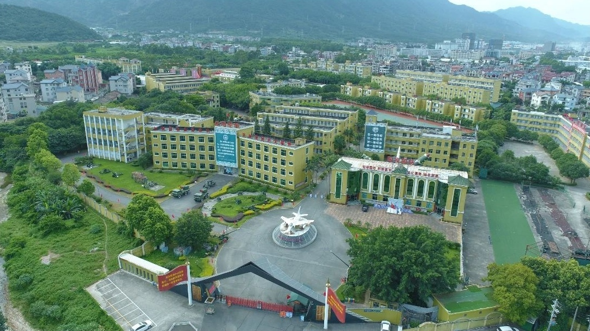

龙翔
初一
| 时间 |
2024年11月19号至23号 |
| 地点 |
福建龙翔国防教育基地 |
| 人物 |
福州第四十中学初一、高一学生 |
| 费用 |
515元/人 |
2024年11月19号至23号，全体初一、高一学生到福建龙翔国防教育基地进行了为期5天的社会实践。这也是9班首次社会实践。
概况
与其说是社会实践，倒不如称其为地地道道的军训。本次军训以训练为主，游戏为辅，实践部分极少。（所以以下称这次社会实践为“军训”）
福建龙翔国防教育基地，简称龙翔，坐落于福清市镜洋镇，较为偏僻。
在龙翔的五天中，前三天都有下雨，第四天是阴天，第五天转晴。气温比较舒适。
有传闻说龙翔的环境很差，比如“床单上有尿渍”、“饭里有头发丝”等。还有一说，就是：
龙翔没有龙，只有翔。
那真实的龙翔是怎样的？让我们走进这五天的生活。
军训前
段长告知了此次军训的须知。其中说到，是否允许带零食由各班班主任决定。刘老师允许大家带少量零食，但绝不能当正餐。
需携带的物品清单和须知非常详细，刘老师还发了pdf文件。内容大致如下。
所有个人物品要做好标记，并写上班级和姓名；允许带少量现金，但不能带贵重物品。
需要带水桶、背包和行李箱。水桶放置生活和清洁用品：
- 6-8个衣架
- 2个几个晾衣夹
- 干净毛巾若干
- 洗漱用品（牙杯、牙膏、牙刷，塑料袋包好）
- 洗发水、沐浴乳
- 洗衣皂（塑料袋包好）
- 洗澡用的拖鞋（塑料袋包好）
- 1-2双适合训练的运动鞋（含1双白鞋）
- 1-2卷垃圾袋
背包放置学习与防护用品：
- 2条红领巾
- 水杯（非玻璃杯）
- 雨伞
- 4-5个口罩（塑料袋包好）
- 笔记本、笔
- 爱看的书（非小说漫画等）
- 朗诵稿、歌词各3份
- 卷纸/抽纸/手帕纸/湿巾
- 风油精/花露水、防晒霜
- 个人药品（如晕车药）
- （女生带）梳子、女生用品
行李箱放置衣物：
- 日常外穿衣物
- 朗诵穿的服装
- 内穿衣物
- 可选：台灯/手电筒/枕头/睡袋/大塑料袋（装穿完的脏衣服）等
- 特殊：张雨希、林奕扬带朗诵服装；孔祥懿带横幅
周二早上，7:15，大家带着行李走进了四十中，操场上热闹非凡。随后，各个老师带领本班队伍离开操场，走上了大巴；有一些人去了拼车。
走上南台大道，在福州南连接线高速上行驶；跨过闽江，越过五虎山隧道；出高速，来到镜洋互通，周围是县城的景观：店铺、工厂、电动车、居民楼……看着一栋栋楼房被甩在后面，突然，大巴右转，楼房变得稀疏，景致更亲近自然。车流不多，大巴很快驶进右侧的岔路。这条岔路看上去宽阔，丝带一般，一眼能望到底。跨过一条小溪，道路尽头逐渐清晰，军旅生活的气味扑面而来。
下车后一片混乱，大家都忙着找自己的行李（尽管刘老师一再说先随便找一个行李，待会儿再认领）。
这里说个题外话。杨依诺其实带了手机，由于藏得挺严实没被发现。反倒是他爸爸向刘老师“揭发”了她，这才被刘老师知道。[2]
事实上，四十中军训期间也有其他学校来此处进行“社会实践”，但他们的待遇看起来比四十中好得多。
入口


龙翔入口[4]
作为“国防教育基地”，入口必须有创意。龙翔的入口以隐形战斗机为设计灵感，左右两侧是写着标语的旗帜。
来到龙翔的大巴车停在大门右侧的空地上，下车之后发现教官已经等候已久。
大门后面就是龙翔的“门面”——一架战斗机。龙翔的一大特点是园区内保存着各种退役装备，大炮、坦克、战斗机，一应俱全。上面都印有“中国人民解放军海军（空军/陆军）赠”。在很多地方都能看到这些东西，例如食堂出口的草坪上有坦克、航空航天馆外的大草坪有战斗机、龙翔入口左侧有大炮。
其实大路旁还有一个看上去荒废的公交站，名为“龙翔站”，广告牌上还写着“期待您下次光临”。
辅导员等候已久。踏入龙翔大门，5天的军旅生活正式开始。
辅导员
话说龙翔的教官不叫“教官”，而是叫“辅导员”。在龙翔，“辅导员”是官方的称呼；如果叫“教官”大概是没用的。但耐不住很多人还是叫“教官”，于是这两种称呼在龙翔同时存在。
辅导员穿迷彩服、戴帽子，很容易辨识。
龙翔有专门为辅导员准备的喇叭，辅导员可随时取用。每天叫宿舍里的人起床、集合或者在大厅里“发号施令”都离不开它。其中有一个喇叭上面还贴了很多搞笑的贴纸。
同学们到宿舍放置行李。在楼下台阶旁的空地上，我们看到了9班的辅导员。在后面的活动中，同学们对他产生了以下认知和了解：
- 因为他嘴巴突出，被学生称为“鸭嘴兽”。
- 他的名字叫“王文浩”，但具体哪个wén、哪个hào不知道（下面统一称为“王文浩”）。当然也有人说他叫“王浩文”。一次其他辅导员还拿他的名字玩梗，说“文浩浩文！”
- 拉练时，他说他在新疆当过兵，后来退役来到龙翔；但后来又变成“当武警”和“当警察”。
语言
辅导员各有各的口音。举个例子，喊“一二一”时，有一个辅导员是这么读的：
一儿一
因此那个班的学生喊口号时故意将“一二一”喊成“一儿一”。
另一个辅导员则读成这样：
亚二一
这还影响到过9班辅导员。一次同学们走在吃饭的路上，听那个辅导员喊“亚二一”，不久他也喊成了“亚二一”。
还有一种通用口音，那就是喊“立定”时，辅导员会刻意加重其语气，喊成：
列——丁！
龙翔的辅导员还喜欢喊某个方阵的名字，例如四十中、初中部、高中部、×班等。被叫到的集体需要喊到！回应，就比如下楼集合时，会出现以下情景：
辅导员：“四十中？”
学生：“到！”
辅导员：“四十中？”
学生：“到！”
辅导员：“高中部？”
学生：“到！”
辅导员：“高中部？”
学生：“到！”
辅导员：“高中部一、二、三楼，下楼集合！”
……
辅导员：“初中部？”
学生：“到！”
辅导员：“初中部？”
学生：“到！”
辅导员：“一、二、三楼，下楼集合！”
（集合完毕后）
辅导员：“一班？”
学生：“到！”
辅导员：“二班？”
学生：“到！”
辅导员：“三班？”
学生：“到！”
……
辅导员：“感恩的心？”
学生：“到！”
辅导员：“队列方阵？”
学生：“到！”
这样的情景，每天要重复很多次。
到了军训的第二天，陈睿卓、唐家祺、郑锦熠三人就发明了“新玩法”——别人喊“到”，我就喊：
操！
于是越来越多人开始喊“操！”，甚至推广到了别班。而后同学们的应答虽然是“操”，但辅导员却以为是“到”，这事也不了了之。
辅导员的语录数不胜数。如：
吵什么呢！
齐步——回去。
调整军姿！
军姿十分钟，开始！
后面几个更为经典，军训结束后多次被模仿。比如跺脚时，9班辅导员经常这么说：
小碎步跺响！
1秒钟跺50下！
行为
辅导员并非完全平等。在众多辅导员中，有一个总辅导员管理所有辅导员。因此龙翔会出现“辅导员大骂辅导员”的“奇观”。
论压榨学生，辅导员绝对是专业的。他们喜欢用“钓鱼”战术控制学生。相信大家在龙翔不止一次听过这几句话：
如果今天练得好，明天就全都是玩；如果练得不好，就全都是训练。
明天（或下午）训练的时间取决于你们现在的态度。
这一遍练得好就休息，练不好就一直练。
最后一遍练完就休息。
事实上，哪怕同学们练得再好，也鲜有玩的时间。
练得好了，辅导员就会“挑刺”，指出方阵中的部分学生表现差，并让玩的时间泡汤。
刺也没的挑了，就这么做：
第四晚出来集合。辅导员说宣誓完就回宿舍，结果宣誓了两遍后又冒出个唱国歌环节；本来说“唱得好就提前解散”，等到唱得好了，又开始练队列/感恩的心，回宿舍的最早时间也自然被推到九点半。
所以千万不要相信辅导员口中的“这一遍”。正确的做法是做好练第二遍、第三遍或练其他项目的准备。
在如此压榨下，5天的社会实践变成军训是必然的。毕竟作为“国防教育基地”，本来就和“实践”关系不大。但是五天内，似乎“国防”也没体现多少，因为在龙翔的活动以训练为主。
训练
训练，是“闭营仪式排练”和“队列动作训练”的统称。
军训以“班”为单位展开。即所有行动必须跟随本班；如要离开班级，必须进行报备。
队伍共有四列，从矮到高排。训练和集合时都按照这个队形站。
队列动作的训练在第一天就开始了，主要有如下项目：
- 稍息立正、跨立立正
- 停止间转法
- 敬礼与礼毕（含半面向左/右转）
- 齐步走的行进与停止（“停止”后改为“立定”）
辅导员命令如下：
第一项科目：稍息立正、跨立立正。都有，稍息！
立正！
稍息！
立正！
跨立！
立正！
跨立！
立正！
第二项科目：停止间转法。都有，向——右——转！
向——右——转！
向——左——转！
向——左——转！
向——后——转！
向——后——转！
第三项科目：敬礼与礼毕。都有，半面向左——转！
敬礼！
礼毕！
敬礼！
礼毕！
半面向右——转！
第四项科目：齐步走的行进与立定。都有，向——后——转！
齐步——走！一二一，一二，立定！
向——后——转！
向前，对正！放！
齐步——走！一二一，一二，立定！
向前，对正！放！
此外还有站军姿、向前对正和原地踏步走。
站军姿是最频繁的项目，王文浩动不动就会让大家“军姿十分钟”，起初有一个人动就多站一分钟，后来一个人动直接加五到十分钟。当然这只是噱头，实际不会站这么久。
军姿的要求十分严格，比较经典的有这几个：
- 脚跟并拢、脚尖分开约60度
- 收腹挺胸、身体前倾
- 双手紧贴裤子、中指贴于裤缝
辅导员要求齐步走时不要那么直，就跟日常走路一样。王文浩要求，喊“齐步——”时需身体前倾，否则就回去重来。于是有：
齐步——回去。
在日常齐步走时就没有这么严格的要求，但会出现一个环节：王文浩会时不时喊“一二一”，学生需喊“左右左”，对应着左脚和右脚；还有别的口令，像这样：
辅导员：一，二，三，四！
学生：一二三——四！
辅导员：一二三——四！
学生：一二三——四！
或者是：
辅导员：一二，三四！
学生：一二，三四！
初到龙翔时辅导员就要求：凡是齐步走时经过老师，就要有一个带头的学生喊老师好，然后方阵中的学生跟着喊老师好；经过辅导员时则喊辅导员好。
王文浩喜欢在①号多功能大厅外的棚子那里进行训练，这也是9班饭后集合的位置。
当然，龙翔的特色还得是声音。
凡是要动脚的动作（齐步走除外）跺脚声必须响亮、有气势——这也是评价学生表现的重要指标之一。
最能体现该要求的动作是向前对正，跺不响就一直跺。王文浩曾说过，大家只需要使劲跺就行，地板坏了他会赔。
另外，礼毕时要有拍裤子的声音、齐步走时要有划过衣服的声音。
到了第三天，训练的项目出现了“分化”。为了圆满地举行闭营仪式，大家分成了四个方阵进行训练：
| 方阵 |
展示项目 |
归属 |
| 队列 |
队列动作 |
初中部 |
| 感恩的心 |
《感恩的心》手语操 |
初中部 |
| 国家 |
《国家》手语操 |
高中部 |
| 炮排 |
放炮 |
高中部 |
9班位于队列方阵。该方阵的展示内容其实就是的训练内容，即稍息立正与跨立立正、停止间转法、敬礼与礼毕、齐步走的行进与立定。
炮排是唯一一个配有道具的方阵，放炮主要是为了增添氛围感。
有没有发现上面没有提到跑步？其实在龙翔几乎没有跑步这一项目。唯一的一次，高中的学生因为站不好而被罚跑了一两圈。
另外，龙翔有评选“优秀标兵”。在第一天训练时，王文浩看大家军姿站得太差，就告诉大家自已已经有优秀标兵的候选人了，徐嘉明、薛阅晨等人被他看中。
食堂
饭前
长时间的训练，吃饭是补充体力的重要环节。但想要进入食堂，必须从一条路走——因此每到饭点、这里必然拥堵。
之所以如此，是因为辅导员有一个习惯，走一段就得停一段，然后向前对正——哪怕前面很长一段路没人。
中午或晚上到食堂，入口都会摆放着几箱水果。到这里时，两列学生需向前走，一人拿一个水果；然后另外两列跟上去拿。拿完后，需到门口的水池洗手，学生往往只是淋一两秒就走。
每餐的水果是随机的，但总共就三种：
许多人不大爱吃，他们的水果就会出现在其他学生或辅导员手上。
终于可以进入食堂了。龙翔的食堂很大，进入后左侧是打饭窗口。打饭窗口很多，窗口前的地上贴着一米线，排队时需保持距离。还有两个打汤窗口，打汤是可选的。
右侧是餐桌。龙翔的桌面是塑料的圆桌，一桌坐八人。辅导员要求一桌只能坐同一个班的学生，导致打完饭后时常发现前排的桌子被别班占领，只能端着餐盘走来走去，寻找座位，不大容易。
龙翔有两个食堂，分别是一号食堂和二号食堂，学生都在二号食堂吃饭。二号食堂的出口前面就是一号食堂。大家除了在里面训练过一次外就没有再进去。而在一号食堂训练的期间，辅导员甚至踩在桌子上指挥训练，可见这个食堂已经不承担用餐的功能了。
饭菜
饭菜的味道一言难尽。第一天午饭时，同学们都说米饭很黏，不好吃；第三天早饭时，同学们推测豆浆是用粉跑的，因为从汤桶最底下打的豆浆没有豆渣。
这里的一些菜表面都裹了一层粘稠的汤汁；而午餐和晚餐时，会有一块饼，荤的素的都有可能。
辅导员说可以加菜，但像鸡腿这样一人只能有一个的菜不能加，当然也几乎没人主动加菜。
不像传言中的那样只有“馒头配萝卜干”，龙翔的早餐花样还是挺丰富的，一个鸡蛋是标配，另外还有两道小菜，主食则是馒头、包子等，尤其有一天早餐的三角糕味道很不错。因此，一些人说早餐是三餐内最好吃的了。
但另外两餐就不一样了。每次你去外面，就会看到部分装剩饭剩菜的桶已经满出来了，还堆出了一座小山。这种现象最早体现在第二天的晚餐中，一些人表示那顿饭是最难吃的。还有一些人说，当时看到这一幕时差点吐出来。
饭后
说到这里就不得不提一下龙翔对剩饭剩菜的处理要求。
龙翔的洗碗机大概是自动的，但特别脆弱。在讲用餐要求时，辅导员告诉大家，哪怕是一个饭粒也可能导致洗碗机被卡住。因此餐盘的善后处理至关重要。
- 倒剩菜
食堂出口和入口分开，出口摆着很多蓝色塑料桶，学生的剩菜都倒在这里，这能解决大部分剩菜。
- 洗餐具
龙翔的餐具包括金属餐盘和金属勺子（没有筷子），倒完剩菜后会出现食物残渣黏在餐具上的情况。这时需走向旁边的水池进行简单清洗。清洗的目的是冲掉残渣，盘子上的油渍则无需关心。
- 放餐具
不远处就有蓝色箱子和金属盆。学生需将餐盘整齐地码放在箱子里、勺子扔进盆中。
处理完毕，就要到指定位置集合。在所有学生到齐前允许进行装水、上厕所，到齐后就要开始接下来的活动。
场所

这就是龙翔的俯视图[1]。右下角即为入口，入口右侧空地就是停车的地方。
操场
观察发现，龙翔有两个操场。小的就叫操场，大的则是大操场。为了区分，下文将小的那个操场称为“小操场”。
开营仪式、闭营仪式都在小操场举行。这个操场和学校的操场配置差不多，但旗杆是在篮球场靠近主席台一侧跑道的。还有一点令人无语：闭营仪式前，辅导员让大家先在操场坐一会儿，结果有人发现坐了一会儿裤子、鞋子被染绿了，就说“操场会掉色！”
在消防演练时，学生首次到达大操场，当然也只去过这一次。去“大操场”的路上要上一段坡。到达后，只见一片水泥地板，有的还是开裂的；跑道淡到基本看不见，跑道上面还停着各种各样的车辆。也就是说，大操场其实等同于停车场！
多功能大厅
龙翔有两个大厅，分别为①号多功能大厅与②号多功能大厅,两个大厅位于同一个建筑中（图中靠近小操场的白色长条就是多功能大厅）。其中，“②号多功能大厅”里摆放着射击的相关道具，“①号多功能大厅”位于一号食堂前，是同学们常去的地方，用来进行文艺汇演、朗诵比赛等。两个大厅都有舞台，但②号多功能大厅的地板是人造的草皮；①号多功能大厅装修就精致很多，舞台上还有落地的屏幕以及聚光灯，配备了塑料椅。
其他
我们再认识一下龙翔的其他场所，这些场所在其他模块会一一介绍。
多功能大厅左侧深灰色和浅灰色的楼分别为一号食堂和二号食堂；小操场上方四栋楼为宿舍楼，宿舍楼旁深蓝的东西就是小卖部。
显然，从入口进入，一直直行就能到小操场、食堂、宿舍等地方，但大家从没从这条路走过。辅导员都会带大家从入口左侧的路去这些地方。
那条去食堂的固定路线大概是这样的：从宿舍楼出发，走到多功能大厅右侧的道路，转弯到达旁边有五栋楼的那条路，再右拐，从那棵大的树旁进入食堂。
项目
辅导员声称“龙翔有60多个项目”。在军训期间，大家也看到不少场馆，例如海军船舰馆、航天航空馆。
辅导员“明确”了在龙翔的制度：五天内的活动分为训练和玩，两者相互穿插，玩的时间由训练的表现决定。练不好就别玩，练得好甚至可以整天都在玩。辅导员还说，进入场馆是需要门票的，门票在辅导员那里，视情况发放。
讽刺的是，9班一个场馆都没去过，更没见过龙翔的什么“门票”。5天内，9班只体验了这些：
射击
龙翔有真正的射击项目，甚至有真人CS的场地。但同学们只能玩低级的射击——枪是看得见摸得着的，但射击的目标是电脑屏幕上显示的。游戏界面为10个瓶子和一个移动的屏风。有10次射击机会，目标是尽可能击碎更多瓶子。
设备就几台，所以学生要排队体验，排队的人就坐一个塑料板凳。
很多人实操后发现弹道偏左，甚至还有连发的现象。
VR
实际上VR、射击、穿越火线都在一号食堂楼上，只不过用一面墙把射击和另外两项的场地隔开了。第二天晚上，辅导员让没体验的班级去体验VR，到达后照样坐着塑料凳排队体验。
龙翔有两台设备，一台可同时供4人体验。9班到达时，两台是分别给两个班级体验的——因此一次体验的人数固定为4人。
VR的场景有三款，都是“过山车”场景。王文浩让大家转过去不要看，防止大家看到画面失去新鲜感，但还是阻止不了同学们偷看。
体验完后，9班来到②号多功能大厅。此时没有体验的班级正在跟“总辅导员”互动，9班参与了“猜口袋里有没有东西”、“每班请人表演《金龙拍拍操》”两个主要环节。
穿越火线
听着挺高大上，实际上是科技馆里的常客。因此学生对这个项目的体验感不高。
游戏
多功能大厅门口的空地是第二天上午的游戏场地之一。学生在这里体验了两个项目，但性质和“穿越火线”一样。
观影活动
军训前上映了一部《志愿军：存亡之战》，于是第一天晚上，全体学生就到①号多功能大厅观看了前作《志愿军：雄兵出击》。但看了一半就因为时间太晚而被暂停了，辅导员让大家“有兴趣回家看”。
消防演练
第二天早上集合后，辅导员通知事项，然后大家就回到宿舍准备消防演练。警报声响起，学生用毛巾捂脸撤离宿舍。
龙翔为此贴心地准备了烟雾（烟雾还很熏人），氛围感十足；当然学生是有在说笑的。撤离到楼下，立刻有辅导员让大家就近蹲下，撤离得差不多了就找到本班队伍排队，准备到大操场进行灭火器实操。
然后的安排使学生对龙翔的印象更差了。所有班级的方阵围成一圈，前面摆着个铁桶，里面有燃烧的木柴。然后让每个班派一位代表体验灭火器，其他人就只能看着。于是学生第一次开始集体吐槽龙翔：
有120个项目！
我都不知道龙翔怎么赚钱！
玩得太开心了！
饭菜健康又美味。
两天就把120个项目都玩完了！
我们再看一看四十中官网。官网记录了不仅写了初一、高一在龙翔的见闻，还有初二、高二在幸福庄园的活动。在初二、高二的活动介绍中，详细讲解了茶艺、农耕、香道、葱饼与豆浆制作、证券知识讲座、电工与木工实践、法政馆参观等项目。再看看对龙翔项目的介绍：
研学期间，基地组织的消防演练、徒步拉练、真人CS活动、军事射击、观影等联欢活动丰富了学生的体验，给学生们留下了美好的回忆。
这一段非常简略地概括了学生在龙翔的趣味活动，说明真的没什么可写的。这下你应该知道为什么不说这五天是“社会实践”了吧。
住宿
一个基地的好坏，绝不是其荣誉的数量、项目的多少，而是在于它最根本的细节——住宿条件。
分布
要到达宿舍，首先得下几阶台阶（宿舍楼的地面是设计成下沉的）。下台阶后左右各两栋宿舍楼。
学生住在下图的四栋楼中，其中：初一男生住振兴楼、女生住尚武楼；高一男生住崇军楼、女生住自强楼。
左边的楼有6层、右边有5层。每层楼有两个楼梯口、两侧各有一个厕所、厕所门口有若干水池，走廊有防盗网和晾衣杆。
女生的宿舍楼白天有男辅导员，晚上是女辅导员。
龙翔的厕所环境居然比四十中还好，每个隔间都可以正常锁上，且高度足够，看上去干净整洁。厕所外面是多个水池，这也是学生洗漱的地方。
宿舍也这么好吗？我们先看配置。
一间宿舍有两扇窗，其中一扇是连接走廊的，这扇窗旁有晾衣架；空调、风扇齐全；左右各3个上下铺，共计12张床。
辅导员曾经说：“不要再床上吃零食，不然会招惹小动物……”当然这种现象较为罕见，没有人公开反应宿舍有“小动物”。
床
初到龙翔时是没有床单、枕套和被套的，只有被芯和枕芯，需要在开营仪式后到一楼统一领取。它们合称三件套。
传言中的床单尿渍不知真假。从外表上看，三件套是经典的军旅绿色，表面相对干净；但凑近看就发现不对劲了，举个例子：枕套使用魔术贴封口的，而魔术贴的表面看上去自然不咋地。
到龙翔的第一天，辅导员带大家了解了内务相关要求，随后到台阶旁空地教学被子的叠法。龙翔的被子也因为其叠法的特色而被称为“三折被”。后来在四十中，就有一些人用眼镜布、餐巾纸等物品叠出迷你三折被，可见其非常经典。
当时的场景是这样的：地上铺一草席，辅导员脱鞋站在草席上，一遍遍地向不同批次的学生讲解三折被叠法。周围学生围成一圈，水泄不通，不时传来起哄的声音。值得注意的是，有人发现被芯有黑点，大喊“发霉了！”然后就被辅导员“制裁”了。
话说龙翔已经玩转了“自动化”。除了动不动卡住的洗碗机，龙翔的洗涤房间更是像极小工厂的流水线。闭营仪式后，辅导员让大家拆下三件套，随后带领大家来到多功能大厅旁一个不起眼的房间，里面摆着几个比人还高的洗衣机，透过圆形玻璃可以看到很多正在清洗的三件套。洗衣机运行的声音很大，走近时还能感觉到热气。洗衣机旁是小山一般的三件套，有的放在三轮车上，有的干脆堆地上。同学们就把自己的三件套扔在这几堆上面，扔完就可以走了。
床是用铁架支撑的，因此稍微动一下就会吱吱作响。
内务
领完三件套，回宿舍后就开始龙翔的第一个项目——内务整理。
龙翔对内务要求严格。床单无褶皱是基本要求，对物品的摆放位置也有一番规定：叠好的三折被需居中置于床头（定义朝门的一侧为床尾），枕头平放于上方。
书包也放床上。但不同辅导员对放置的位置产生了分歧。一个辅导员说放床尾靠墙的一侧，王文浩却要求放中间。
辅导员不要求被子跟军队里叠的“豆腐块”那样棱角分明，但至少得有个大概。学生忙活半天，到时间后辅导员一间间检查。自然每间能合格的就那么一两个，其他人就挨批去。每次午晚休后辅导员都会进行例行的巡视，要求也没那么严苛。
水桶统一摆放在左侧床底，行李放右侧床底，且需要摆成“一条线”，也就是要对齐。
鞋子统一摆在走廊靠宿舍一侧，拖鞋和宿舍外穿的鞋都一样——也是摆成一条线；门口有垃圾桶，每次下楼集合，指定的宿舍长需倒垃圾，同时挨着厕所的宿舍得把厕所灯关了。
上面这些就是内务的基本要求。大多数时候检查不合格也就是私下批评教育；但有一次发生了戏剧性的一幕：
第三天，学生在①号多功能大厅进行队列、感恩的心训练。辅导员忽然让大家转过去坐下，要给大家一个“惊喜”。
接下来就是史诗级的一幕——只见宿舍的照片被投放到大屏幕上，并有标注是哪栋楼的哪间宿舍，引起一片惊呼，不少人说自己的宿舍肯定不合格。
照片不仅有宿舍内的，还有走廊的鞋子。辅导员开始一一询问照片中宿舍的宿舍长以及未按要求放置的物品是谁的，问完之后切换下一张。相关人员被罚到台上站着；不够站了干脆直接站到方阵里。途中有一个台上的人找地方坐下了，还挨了批评。
总体来讲，龙翔的内务要求如下：
| 项目 |
要求 |
| 床单 |
无褶皱 |
| 三折被 |
叠出大概并置于床头 |
| 枕头 |
平放于三折被上 |
| 书包 |
放在床上特定区域 |
| 水桶 |
摆放在左侧床底、对齐 |
| 行李 |
摆放在友侧床底、对齐 |
| 鞋子 |
沿靠宿舍墙边摆成一条线 |
| 垃圾桶 |
下楼前倒掉 |
| 厕所灯 |
下楼前挨着厕所的宿舍关闭 |
澡堂
龙翔的澡堂为公共浴室，直接降低了洗澡时的舒适性和隐私性。
还有一点很糟糕，就是澡堂离宿舍很远，大概在食堂后面。每次洗澡需要走相当远的一段路。
洗澡是自愿的，辅导员会不停用喇叭喊“要洗澡的同学，带上雨伞和工具，到楼下集合……”到楼下后需排成两列，由辅导员统一带走；如果雨下得很大就不需要排队，直接可以走。
刘老师要求每天都要洗澡，不洗澡还要扣量化分（实际没扣）。刘老师会去每间宿舍（包括男生宿舍）巡视，看到有9班的人就问有没有洗澡，当然可以糊弄过去。
前三天或多或少都有下雨，自然要带伞。这就会出现以下情况：
下雨天 → 易淋雨
路程长、路面坑洼 → 积水、泥泞路段多
穿拖鞋 → 踩水坑易湿脚
携带物品多 → 拿取、行动不便
公共浴室 → 洗澡仓促
这么一来，洗澡的效果大打折扣，脚部更是重灾区。去洗澡的路上还好，回来的话就得更加小心。当然洗完澡后还得进行晚间的活动，也有可能被弄脏哪个地方。
进入澡堂，里面热闹非凡。进门有放伞的地方，但其实也就是两侧的地板；放完伞走进浴室门口，有放衣服的架子。最好别在那放东西，容易弄混。
再往里面——场面好不壮观！
龙翔的澡堂共四排，对应着两个过道。每排分为若干隔间，隔间与隔间间使用铁板分隔。但隔板左右和下方都有空隙，下方的空隙尤其大。女生澡堂和男生澡堂在布局、配置、环境上相差不多。
最糟心的是，每个隔间的帘子具有这些缺点：
- 薄。似乎风一吹就会开始飘扬，一拉就开。
- 小。在帘子拉上的情况下，从外面可以直接看到里面人的小腿。
- 脏。帘子是白色的，污渍自然清晰可见。
每一项都是对舒适性和隐私性全面打压。有的帘子还是坏的。
人为的原因自然不必多言。洗澡时必须保持高度警惕，防止有人突然掀帘子。帘子外此起彼伏的笑声、喊声、谈话声使人倍感压力，只有迅速洗完，才能最大化降低风险。事实上，掀帘子的案例时常发生。外面晃悠的人可能正在寻找目标或找到目标准备下手，也可能聚在一起准备看笑话，但几乎不会是心怀好意的。
更有大型猎奇现场的出现，比如曾发生过：
- 四个人在男生澡堂的同一隔间洗澡。
- 有人边洗澡边拉屎[2]。
- 有人洗澡时发现蜘蛛[2]。
只有你想不到的，没有那些人做不到的。
墙上贴有“冷水”和“热水”的标志；花洒是手持的。在龙翔，花洒使用人数和水温、水量成反比，且靠里面的隔间水温通常比外面的高；花洒有好有坏，甚至有的直接装个水龙头[2]。
当然也别指望把东西放到入口处架子上，那里可是非常乱的。
总之，龙翔澡堂环境乱、场面乱、物品乱，一团乱。
小卖部、开水房
龙翔的小卖部就在尚武楼、自强楼楼下。因此去小卖部比去澡堂方便不知多少。
辅导员说只有在晚上8:00-9:00才能去小卖部，其余时间段去的话就会被驻守在那的辅导员抓住。事实上，四个晚上被安排得满满当当，没有一晚能在8点之前回到宿舍。不过辅导员明面上这么说，实际上只要解散回宿舍，就可以去小卖部，只要在熄灯前一点时间回宿舍就行。
这时，小卖部就会出现拥挤的现象。由于只有两个收银台，结账时一般要排很久队。这种热闹的场面在龙翔属实不多见。由此还出现了一些问题。例如陆梓豪表示，自己结账时由于场面太乱，他不但没付成钱，甚至还顺走了2.5元。
自然这里的物价高得离谱。下面列举一些物品的价格：
| 物品 |
单位 |
价格/元 |
| 矿泉水 |
瓶（500ml） |
3 |
| 方便面 |
桶（常规大小） |
6 [2] |
| 小面包 |
包（散装的一小包） |
2 [2] |
当然进门左侧还有卖汉堡炸鸡的地方，八块十块是少不了的。质量当然没法和外面买的比，例如汉堡的面包是硬的、再铺片生菜和一个“么么脆鸡排”就是了[3]。尽管价格贼贵，但仍然很受欢迎。
| 物品 |
单位 |
价格/元 |
| 汉堡 |
个 |
8 |
| 鸡肉卷 |
个 |
5 |
军训前，段长特意提醒不允许带泡面，但到了龙翔发现这里是允许吃泡面的，于是第一天晚上泡面就被抢光；第二天吃泡面的人数达到顶峰，谁知第三天就被禁止了。原因是这样的：
第二天晚上的时候，由于太多人吃泡面，导致出现了一些“缺德”的情况。当时到处都能看到面饼残渣和汤汁。开水房到厕所垃圾桶、厕所蹲坑都是重灾区，看着恶心。
这里的开水房，顾名思义是装水的地方。大楼梯的两侧各有一个小房间，面向宿舍楼的墙壁是玻璃的。进入后是两个水池，长得和四十中的差不多，有开水口和温水口。
像这样的水池在其他地方也有分布，例如食堂出口左转就有一个水池，学生吃完饭或者训练完休息都会在这装水。
龙翔的水质问题不大，没有出现异物。
龙翔的传说
9班流传的主要传说有二：508和辟邪馒头。
龙翔的宿舍门上、床板上总会有学长学姐留下的提示，大家都乐此不疲地看着。在这些文字中，一个传说脱颖而出，火爆全班。
某间女生宿舍的门上写了一件事：尚武楼的508宿舍曾死过三个人。详细来讲是这样的：
睡觉时，一个人从上铺摔下来，脖子着地，当场死亡；另外二人被龙翔后山来的熊咬死。
上面是事件的核心。值得注意的是，传说中的“熊”一说为老虎。老虎的说法在班上流传更广，但熊的说法更接近传说。
起初这件事在女生宿舍传播，后来孔祥懿传给倪浩宇，倪浩宇很害怕——这样男生宿舍也知道了。一晚306的男生集体分析和推理508事件背后的真相，但这次谈话的过程和结论石沉大海。
集合时也有人在谈这件事。随之而来的是各种衍生的传言：
- 22年时这件事曾上过新闻。
- 以前门后有一张符咒，有人撕了之后，3个鬼就杀了她们。
- 一个晚上，508的两人移到其他宿舍，次日就有一个人死了。
- 逢3、6的年份，508就会死三个人。
虽然这些传言流传得并不广，且不符合传说，但激发了大家的好奇心，有人就说回家的第一件事就是在百度上搜索508。
另外，据说女生宿舍的窗外还能看到教堂。
这件事如此匪夷所思，令人怀疑其真实性。果然离开龙翔后，这件事很快被辟谣，龙翔根本没发生过这些事，但这也成为龙翔的一大代名词。
说到老虎，就不得不提到振兴楼306的馒头。大家刚进入宿舍时，就发现门后有一块馒头，据说可以预示老虎的到来：如果馒头变黑，就说明有老虎！在龙翔，“老虎”神出鬼没，说不定哪天就到了床下。于是这个馒头也被“重点保护”起来，又名馒头仙人。
结果第四天时馒头被辅导员发现了。辅导员表示，再四十中到来之前他们都有检查宿舍，压根没发现什么馒头，让直接扔掉。大家很着急。幸亏颜哲铭弄了一个铁钉，叫做钉钉仙人。如果钉子倒下，说明老虎来了，就这样“保住了全宿舍的安危”，这也是龙翔的代名词之一。
临走前，振兴楼306宿舍又发生了一件事：大家这时才发现，门上写着“快跑，这里闹过鬼”等字样。刘老师来这里时还是不是9班学生写的。
集合
龙翔大概晚上十点熄灯，早上六点起床，因此睡眠时间是比较充足的。熄灯后，宿舍里的人总是会聊天甚至吃东西。辅导员就会来个“突击检查”。有一次振兴楼3楼的部分宿舍吵闹，还被辅导员罚站到走廊。除了晚休，龙翔还设置了午休；同时要求学生睡觉时必须盖被子。
如果有突发情况，可以去找本层楼的辅导员。可以直接推门进入，如果辅导员已经睡着还可以直接叫醒。
起床时，楼下就会有辅导员拿喇叭喊：
四十中，起——床——
声音在龙翔上空回荡许久，难以忘怀。后来学生常常在下课后喊这一句话。
喊完后，每层的辅导员就会去每间宿舍叫学生起床。
起床后就该整理内务和集合了。集合时得先到走廊站好，辅导员例行检查内务；然后就是不停地喊“到”，并陆续下楼。
只要下楼，必须携带水杯；如果下雨了还得带雨伞。训练时水杯（雨伞）要么统一放前面，要么就放在自己的旁边。
拿水杯也有动作要求。当辅导员下令拿水杯时，不管你有没有带水杯都必须弯腰，辅导员说起立时才能站起来。
晚上回宿舍时有体温测量环节。每列依次测量，测量完的学生可以回到宿舍，准备洗漱。
大型活动
班班有朗诵
在军训前，各班就已经开始紧张地排练班班有朗诵了。
第二天下午，全体学生到①号多功能大厅熟悉了一下流程；第三天下午是正式比赛。
9班朗诵的内容如下：
我想带您看盛世中国
奕扬：姐姐，你是从哪里来的？
雨希：我来自新中国
奕扬：那 我们胜利了吗？
雨希：胜利了
奕扬：太好了 我真想看看 新中国是什么样的
雨希：来 我带你去看看我们的新中国
允儿：五星红旗迎风飘扬 胜利歌声多么响亮 歌唱我们亲爱的祖国 从今走向繁荣富强
（永泽：挥舞国旗）
祥懿：为实现中华民族的伟大复兴 我们
全体：准备着 时刻准备着
祥懿&诗语：您看 清澈的爱只为中国的民族精神
王淮&浩宇：您看 犯我中华者虽远必诛的民族气节
祥懿：您看 脱贫攻坚 全面小康 千年梦想 今朝实现
诗语：您看 嫦娥探月 蛟龙深潜 大国正气 世人惊艳
王淮：您看 生态文明 绿色低碳 美丽中国 展开画卷
浩宇：您看 一带一路 互通互联 和平发展 合作共赢
全体：您看 人民幸福 民族振兴
祥懿&诗语：这民族如您所愿
全体：潜龙腾渊 鳞爪飞扬 乳虎啸谷 百兽震惶
王淮&浩宇：这国家如您所愿
全体：奇花初开 矞矞皇皇
祥懿&诗语&王淮&浩宇：这盛世如您所愿
全体：前途似海 来日方长
祥懿：我想带您行走在彩虹里
全体：那是北斗卫星 在指引我们前行
王淮：我想带您去新农村做客
全体：那里的土地 正翻种着时代新绿
诗语：我想带您走进新科技园区
全体：灿若繁星的 高科技让未来触手可及
浩宇：我还想带您去祖国各地 看锦绣河山 春光万里
左半：看万山红遍 层临尽染 漫江碧透 百舸争流
右半：看同学少年 风华正茂 书生意气 挥斥方遒
祥懿&诗语：七十五年斗转星移 七十五年大江东去
左半：盛世中国 告诉您一个地球的惊喜；盛世中国 告诉您一个东方的奇迹
王淮&浩宇：七十五年春华秋实 七十五年日新月异
右半：盛世中国 告诉您一个人间的传奇；盛世中国 告诉您一个时代的瑰丽
祥懿&诗语&王淮&浩宇：七十五年波涛之上 七十五年征帆万里
全体：盛世中国 告诉您一个公开的秘密；盛世中国 告诉您一个永恒的真理：解放思想 实事求是 发展才是硬道理
祥懿：捧起地球村崭新的履历 盛世中国 一步跨进未来的行列里
王淮：这是十四亿颗心跳 迸发出的幸福奇迹；这是十四亿双脚步 追逐梦想的火炬接力
祥懿&诗语：赞美你呀 辉煌七十五年
全体：盛世中国 蓬勃日出
王淮&浩宇：讴歌你呀 奋进七十五年
全体：盛世中国 和平崛起
祥懿：七十五年沧海桑田 中华民族 正行走在 伟大复兴之路上
王淮：七十五年春潮不息 亿万中华儿女 正信心满怀 扬帆进击
祥懿&诗语&王淮&浩宇：高歌迈向
全体：高歌迈向 高歌迈向 新的胜利
奕扬：姐姐，新中国真好啊
雨希：因为有你们的牺牲 才有我们现在的新中国
奕扬：不，不止我，还有很多很多人
雨希：我知道 我们不会忘 祖国不会忘
全体：我们不会忘 祖国不会忘
奕扬：真好啊 新中国的未来 就交给你们了
雨希：请您放心 山河已无恙 吾辈当自强
全体：请您放心 山河已无恙 吾辈当自强 当自强
到了别班朗诵时，大家发现很多班级的台词甚至背景音乐和9班重叠了部分，于是就说别班“抄袭9班的！”
有的班级制作了视频作为背景。刘老师也制作了这样的视频，但辅导员提前2次播放视频，于是画面和音乐变得与朗诵有点违和。
徒步拉练
这是第四天的“重头戏”之一。早上，全体学生到操场集合，辅导员讲解注意事项。然后学生从多功能大厅那边的路走起，轰轰烈烈的拉练开始了。
要求如下：首先，必须带水。没有水杯的人第三天晚上去小卖部买。为什么呢？
辅导员又说，这次拉练有四公里，包不包含返程也不知道。事实上，这次徒拉练共有六公里左右，一些人称其为“长征”。
其次，不要落单，班级之间不要有间距。
徒步拉练的路段在龙翔外，因此大家会暂时离开龙翔。学生仍然以班为单位，只不过排成两列前进。在走出龙翔的大门时，大家自然会说些什么。
哇！要回家了！
再见了！龙翔！
回四十中了！
然后右转，走上那条国道。车不多，路面干净且平坦。左边是山崖，右边是田。偶尔的几辆车飞驰而过，就有人喊“不要走！送我回家！”
各班班主任和辅导员跟在队伍旁。
学生的讲话时是止不住的。有时走得慢了一点，队伍就得小跑一阵。
路上无聊，刘老师还让大家唱起歌。
五星红旗迎风飘扬，胜利歌声多么响亮；歌唱我们亲爱的祖国，从今走向繁荣富强……
学生就把朗诵时的台词接了下去。
为实现中华民族的伟大复兴，我们——准备着，时刻——准备着！
后面的词有几个人还在继续念，然后就平息下去了。刘老师又带领唱歌，很多人跟着哼唱几句，几遍下来唱歌也变得无聊。刘老师问大家还有什么歌。
有人说国歌。于是大家唱起国歌。随后刘老师又问会不会唱强军战歌。
拉练的开端就在新奇与歌声中度过。
学生走在路的右侧。由于没有人行道，大家得尽量靠边。刚开始边上是绿化带，灌木和树遮住部分视野。走了一段路，右边变得开阔，人行道也有了。
拉练途中总有许多趣事，这便是其中一件。右边出现一条岔路，通向不远处的居民区。岔路一侧有一石碑，上书：
玉埔村
岔路口有一道门，也写着这三字。于是有人说：
到蒲林豪家了！
蒲林豪，还不回家？
蒲林豪还做出真往里面走的动作。
右边的绿化带消失，代之以店铺和居民楼。路上有一小孩，看到大家很兴奋。学生就喊：
早——上——好——
How do you do?
总不能一直走这条路。现在左边出现了岔路，学生需要左转过马路。由于需要注意左右的来车，过街时似乎掉队了，学生又开始小跑。
前方道路平直。路边又许多不起眼的杂草，引起一些人的注意。唐家祺、林奕扬等人还摘了一朵很小的花，放在耳朵上，被刘老师发现了。
左拐，柏油马路被水泥路取代。从这里开始上坡，路也变窄了。就这样走进一个村庄。
继续上坡，这条路向右侧延伸。水泥路也没了，周围的景观真相在山路上走。左侧是水泥的围栏，路是沙子路，两侧的树郁郁葱葱，地上许多叶子和松果。
一个电线杆上贴着广告：“简普寨山庄”。学生：
到柬埔寨了！
就这样绕着这座山走了一个半圆，柏油马路又出现了。穿过几个路口，右转。辅导员让大家原地休息，学生坐下来。
这里的环境不错。道路左侧是河流和亭子，跟公园一样；右面也是田。
这是发生了一件令人措手不及的事。一些学生正在聊天，发现刘老师拿着手机，正在和其他人说些什么。期中考成绩公布了！
不少人变得忐忑；而听到自己的成绩后，大家几家欢喜几家愁。
休息片刻，开始返程。又走进一个村庄，路面也是干净的柏油马路。左转，走一段，回到了刚才来的路。接下来就沿原路返回。
一路上很多人都说自己考砸了，为此感到难过，聊天的话题也大多数是关于期中考的。快到龙翔入口时，刘老师让单科成绩最好的学生准备分享学习经验。
过马路，眼前就是龙翔的入口了！辅导员让大家不要保持队形了，赶快跑起来；学生顺着这条路直冲下去，场面极为壮观。当然也有些意外：李梦妍跑着跑着水杯突然掉了，只好去捡。
进入龙翔，拉练活动落下帷幕。
文艺汇演
第四天的第二个“重头戏”便是文艺汇演。
刘老师为9班购买了荧光棒，晚会开始前进行分发，让大家挥舞，增添气氛。不料很多人的荧光棒亮不起来，一些人就把荧光棒送给别人。随着晚会的推进，很多人手上已经没有荧光棒，而少数人手上却有着大量收集来的荧光棒。
9班坐在离舞台很远的地方，不容易看清舞台上的人，于是晚会时聊天的人占主导。
学生落座后，首先开始的不是晚会，竟然是期中考的颁奖仪式。一些人的痛苦记忆又被唤醒……
一批批学生上台领奖。这是奖学金的首次亮相，令人羡慕。冗长的颁奖仪式终于在掌声中结束。接下来，辅导员组织学生上厕所。回来后，文艺汇演正式开始。前排的灯被关闭，留着后排的灯。
龙翔开场就给大家放映了一段视频。视频中是学生这四天以来军训的视频。视频配的背景音乐十分感人，似乎能让大家回忆起四天的温暖经历，也对即将离开龙翔感到不舍。但事实上，学生看到这段视频后，几乎全在吐槽，极言龙翔的“假惺惺”。
这段视频还出现了当天上午徒步拉练的视频，看来是当天剪辑的。
视频结束，主持人上台。
9班非常“积极”，承包了两个节目。这不，第一个节目就是林奕扬的架子鼓表演。背景音乐是西游记的音乐。
这时，后排的灯也关了。
背后大屏幕的画面换成了粒子动画，后面每个节目都有其对应的画面。
第二个节目还是九班的，叫《少年中国说》，背景是中国的汉字。刘老师让大家一定要加油，这时候加油的力度显然不足。相比台上的几个人也非常“尬”吧。
后面的节目直接打了9班的脸。很多节目竟然是单人的表演。刚开始时学生还评价“表演的人一定很‘勇’”，后面发现都是这样的时候也就无话可说。节目以唱歌为主，还有一些街舞表演。一般在跳街舞或唱到很流行的音乐时，会引起一片尖叫声，非常嗨。
最后一个节目是《如果可以》。这个节目压轴出场，学生的情绪达到高潮。全场跟唱。
唱完后，主持人又上台，加了一个街舞节目，尖叫声也震耳欲聋。
文艺汇演就这么结束了，辅导员组织大家离开会场，进行晚休，为最后一天的闭营仪式做准备。
离开
闭营仪式
一切训练都在为这个环节做准备。第五天早上，全体学生来到操场，准备进行成果展示。
台上的桌椅已经摆放停当，等待领导到来。这段时间内学生先在操场上坐下，操场会掉色这件事就是在这时被发现的。然后辅导员甚至玩起了水球。
当然，辅导员还是再三提醒跺脚声要响亮。为此甚至这么说：
我教你一个办法：永远记住，你的左脚下是你本班的辅导员，踩死他……
领导落座后，仪式正式开始。高中部国家、初中部队列和感恩的心方阵依次进行展示（队列成果展示时竟然没有向后转环节）。
随后进行升国旗和宣誓。
这两个环节在第三天晚上就开始了训练。唱国歌时的声音肯定比在四十中的响亮许多。宣誓大致内容如下：
辅导员：“我是一名优秀的，”
学生：“我是一名优秀的，”
辅导员：“福州第四十中学学子。”
学生：“福州第四十中学学子。”
辅导员：“为实现中华民族伟大复兴梦想，”
学生：“为实现中华民族伟大复兴梦想，”
辅导员：“我庄严宣誓：”
学生：“我庄严宣誓：”
辅导员：“坚决认真践行，”
学生：“坚决认真践行，”
辅导员：“社会主义核心价值观，”
学生：“社会主义核心价值观，”
辅导员：“热爱祖国，”
学生：“热爱祖国，”
辅导员：“热爱人民，”
学生：“热爱人民，”
辅导员：“热爱中国共产党。”
学生：“热爱中国共产党。”
辅导员：“保卫国防，”
学生：“保卫国防，”
辅导员：“不怕困难，”
学生：“不怕困难，”
辅导员：“不怕吃苦，”
学生：“不怕吃苦，”
辅导员：“坚决捍卫祖国利益，”
学生：“坚决捍卫祖国利益，”
辅导员：“绝不背叛祖国。”
学生：“绝不背叛祖国。”
辅导员：“与一切有损国家利益的，”
学生：“与一切有损国家利益的，”
辅导员：“敌对势力作斗争。”
学生：“敌对势力作斗争。”
辅导员：“做一名有灵魂、”
学生：“做一名有灵魂、”
辅导员：“有本事、”
学生：“有本事、”
辅导员：“有血性、”
学生：“有血性、”
辅导员：“有品德的中国人。”
学生：“有品德的中国人。”
辅导员：“国旗为证，”
学生：“国旗为证，”
辅导员：“天地为鉴，”
学生：“天地为鉴，”
辅导员：“强国有我，”
学生：“强国有我，”
辅导员：“请党放心。”
学生：“请党放心。”
辅导员：“牢记历史，”
学生：“牢记历史，”
辅导员：“yǐ pào míng zhì。”
学生：“yǐ pào míng zhì。”
辅导员：“牢记历史，”
学生：“牢记历史，”
辅导员：“yǐ pào míng zhì！”
学生：“yǐ pào míng zhì！”
辅导员：“牢记历史，”
学生：“牢记历史，”
辅导员：“yǐ pào，míng zhì！！”
学生：“yǐ pào，míng zhì！！”
辅导员：“宣誓人：”
学生：“福州第四十中学全体学生！”
“yǐ pào míng zhì”这个词非常奇怪，至今没人知道具体是哪四个字。事后有不少学生都在讨论这个词。
另外在闭营仪式当天，辅导员还临时加了一句台词。就是在齐步走到台前准备展示时，需喊：
磨砺青春，升华自我！
一，二，三，四！一二三——四！
这句也很经典。
随后开始颁奖环节，其中包括每班的结营证书领取环节。这期间，其余学生只好站着。
颁奖的音乐是《万宝路进行曲》。
颁奖结束后，闭营仪式结束，各班班主任可组织拍合照。刘老师带大家去主席台左侧的一个地方拍照。然后就要开始准备返程了。
总结五天的流程
- 第一天
- 操场集合，乘车到达龙翔
- 放置行李，初见辅导员
- 开营仪式与事项通知
- 学习内务整理要求及实操
- 午餐、午休
- 训练：四个科目动作示范
- 晚餐、洗澡
- 观影活动
- 晚休
- 第二天
- 起床、早餐
- 消防演练
- （廉价）游戏环节
- 训练
- 午餐
- 电脑射击
- 午休
- 游戏
- 朗诵流程熟悉
- 晚餐、洗澡
- VR体验、互动环节
- 晚休
- 第三天
- 起床、早餐
- 训练：分方阵
- 午餐、内务检查
- 朗诵
- 训练
- 晚餐、洗澡
- 训练：国歌、宣誓、方阵训练
- 晚休
- 第四天
- 起床、早餐
- 徒步拉练
- 午餐
- 训练
- 晚餐、洗澡
- 文艺汇演
- 晚休
- 第五天
- 起床、早餐
- 闭营仪式
- 午餐
- 三件套整理
- 返程
返程
吃完在龙翔的最后一餐，学生就拆下了自己的三件套，放到洗衣房（具体过程见“住宿”模块）。随后，学生整理自己的行李，到走廊排队，依次下楼集合，准备返回。
这时发生了一件事：振兴306的学生这时才发现门上原来写着几个字：
快跑，这里闹过鬼
刘老师也前来查看，确认不是9班搞的。
返程没有人去拼车。学生就这么原路离开龙翔的大门，上了大巴。大巴发动，学生看着辅导员逐渐后退，最后消失在树木之间。
刘老师手上有不少水果和零食，甚至还有泡面，这时候都拿去分给学生。
车很快到达四十中。学生下车后并没有回到学校内，而是拿好行李，直接回家。
场面有点儿混乱，但没有意外发生。阳光明媚，太阳炙烤地面，学生匆忙地拿起行李，家长已在不远处迎接。这次在龙翔的五天军训正式落下帷幕。
显然，这并不是初中阶段唯一的一次社会实践。那到了初二，大家又会来到哪个地方呢？我们拭目以待。
[1] 图片经过AI增强。
[2] 孔祥懿、林芷琪提供了相关资料，阅读时请仔细甄别相关内容真实性。
[3] 汉堡的质量、汉堡和鸡肉卷的物价由薛阅晨提供。
[4] 第二幅图拍摄时间早于四十中军训时间。在学生到达后，进门左侧写着那栋楼中间有文字的那面墙已经换新，不是图中的绿底白字。
爱国有方[1]
初二
| 时间 |
2025年11月17号至21号 |
| 地点 |
罗源县爱国有方综合实践营地 |
| 人物 |
福州第四十中学初二、高二学生 |
| 费用 |
620元/人 |
2025年11月17号至21号，全体初二、高二学生到罗源县爱国有方综合实践营地进行了为期5天的社会实践。这是9班第二次社会实践。
概况
军训前
此前，根据往届经验，初二应该去的地方是幸福庄园。由于去年学生去龙翔时，初二去的正是幸福庄园，因此可以总结：
这种说法一直占主导。
期中考第三天，以唐家祺为首的一些人宣称：这次去的是欧乐堡。但这些结论在回执下发后很快被推翻。“爱国有方”，一个很陌生的名字。此前班上无人去过。反倒是初一和高一的学生去了幸福庄园。
有一点令人无语：回执的注意事项中竟出现了这一段话：
近期若孩子出现呕吐、腹泻等症状，需待症状消退后72小时方能前往福清龙翔国防教育实践基地参加社会实践。
竟然还保留着往年的“福清龙翔国防教育实践基地”？
刘老师将回执投屏时，“福清龙翔”被红笔涂掉，改成了“爱国有方”。这反而引起了注意，班上出现了稀稀疏疏的笑声。
刘老师告诉大家，听说宿舍的环境比龙翔要好（其他她也不知道了）。第二天学生就建立了对基地的初步认识。在班上流传较广的有这几条：
- 宿舍楼有三栋。
- 宿舍为八人间（一说六人间），床是木制的。
- 宿舍虫子多，晚上会出现“闹虫灾”的奇观，因此基地被戏称“昆虫乐园”。
当天最后一节课，段长和去年一样召开“动员大会”，宣布了基本的注意事项；尤其强调不能带电子产品，否则没收（中考后归还）加处分。刘老师把物品清单再次发到群里。会中，段长还说了一些初一实践出现的莫名其妙的问题，例如：文件里让带拖鞋，本是洗澡时可以穿的。段长告诉大家：
上次社会实践有人带毛毛拖！……
这里的一切都是全新的、未知的，等待着大家去探索……
7:15，刘老师到达操场。
7:35，9班离开操场。
7:57，9班上车。
8:00，车辆启动。
8:48，车辆上高速。
从四十中到爱国有方的路程约80km，而到龙翔仅约40km，因此单程耗时更长。上高速后，由于车内外温差，导致有一段时间车窗内部起雾，于是有很多人在上面写字。
9:14，出高速。
9:31，车辆到达爱国有方。
爱国有方的大门比较普通，没有龙翔那样经典。进门后有一座假山。车辆进门后右转，进入一串绿色棚子，然后停车。学生下车后，有教官带领大家往基地内走去。
进入后来到小操场，教官要求学生打开行李箱检查是否有违禁品。
总体来讲，爱国有方比龙翔好得多，终于称得上“社会实践”。具体好在哪，我们来看接下来的内容。
布局
位置
爱国有方的西边[3]是山。朝远处看去，山间有淡薄的雾气。
宿舍楼旁边就是铁路，向北200米左右就是火车站。经常有火车经过这里，包括：
火车经过的频率较高。在检查行李箱到进入宿舍的一段时间就有3列车经过。
基地周围不像龙翔那么荒凉，周围分布着一些楼房，不远处就是市区。
操场
爱国有方分小操场和大操场。小操场就是学生日常集合的地方，夹在①、②号宿舍楼间，地面是水泥地，上有淡淡的线条。
小操场上面有两个绿色大棚，可以在轨道上滑动，实现自动的敞开和收回。轨道由多个柱子支撑，柱子就架在小操场上。靠近边缘的那个棚子始终处于敞开状态，另一个一般不敞开。
大操场看着更像真正的操场。该操场地面材质为沥青，分红绿两种颜色，上面也有线条。
教官曾说大操场的跑道一圈约220m。在操场的两个弯道旁，分别由旗杆和主席台。但五天内根本没用过旗杆。
台上有一块屏幕，但左上角的一块屏幕经常花屏或者直接黑屏。为此还出现了一场闹剧：
在闭营仪式时有一个唱国歌环节。教官让向后转，学生不知道是要看屏幕还是后面的国旗，犹豫是否要向后转；台上的领导迟疑了一会儿才向后转。
这时，屏幕上的“闭营仪式”背景切换为五星红旗。但恰好那个地方黑了，把国旗最大的那颗星弄没了。唱完国歌，背景切回“闭营仪式”后，那块黑色仍未恢复。也就是说，屏幕上显示国旗时，左上角始终是黑的。
学生还发现，旗杆后面的树上有一个巨大的马蜂窝。
舞台顶部也有一个棚子，结构类似四十中操场上的那个棚子；舞台两侧是音箱，和龙翔的音箱差不多。
学员餐厅（多功能礼堂）
这个地方位于②、③号宿舍楼间，类似龙翔的①号多功能大厅，具有屏幕、舞台等设施。
在一些公众号中，该场馆以食堂的身份出现，里面摆放着圆桌和凳子；学生到达后则没有这些桌椅，主要在这里举行内务教学、心肺复苏教学等项目。尽管如此，教官还是称其为“学员餐厅”，且外面也写着“学员餐厅”四个大字。
但这里有个明显的缺点：太小。它根本容纳初二、高二的学生进行活动，因此联欢晚会、唱军歌的项目只好在其他地方进行。
食堂右侧楼房
共三层，每层功能如下：
| 层数 |
功能 |
描述 |
| 1 |
室内操场 |
实为模拟打靶场馆，无类似操场的结构，但层高更高，相对适合开展项目。 |
| 2 |
实践中心 |
有很多单独的房间，用于体验不同的项目，包括旱地冰壶、剪纸、雕版印刷。 |
| 3 |
教师宿舍 |
通往3楼的楼梯有铁门，防止闲人进入。 |
食堂、宿舍等其他地方将在接下来的内容中介绍。
教官
爱国有方没有龙翔“辅导员”的称呼，官方名称就是“教官”，每个教官的衣服和龙翔一样。
爱国有方的喇叭很少，一般教官讲话就是直接喊出来；但总教官是需要喇叭的，并且为使全体学生都能听见还要使用音箱扩音。除此之外也有个别用喇叭的教官。
9班教官
学生的说法是：9班教官有一副“国”字脸。学生推测他的名字为“丁欧文”[8]，原因如下：
- 一次集合，总教官说：“欧文过来一下。”
- 某教官称9班教官为“丁教官”。
集合完后，他经常就消失了，过一段时间才走过来，带大家进行活动。有时前面的班级已经走完了，周围还是不见他的影儿，9、10班只好干等。
其他班在坐下之前“放凳子”之类的环节，哪怕坐下也要快速、整齐；“向前对正”更是家常便饭。丁欧文则不常搞那些繁琐的流程。来到小操场后，通常刚站定就让大家直接坐下。
因此学生纷纷表示这个教官非常好，比王文浩好不知多少倍。
在王文浩的“散养”策略之下，9班的纪律自然比较散。
集合时总教官让保持安静，9班仍然会有零星的讲话声；总教官让站好军姿，9班也只有部分人有响应。甚至当总教官已经开始对全体学生进行“轰炸”，9班还会就此进行小声讨论和说笑。
神奇的是，9班自始至终没有总教官当众点名批评，而这样的事却在另一些班级发生过。
直到第四天晚上，9班男生因太吵被他留下。他这才告诉大家，不训大家是因为自己的一些特殊原因，否则就凭这种纪律，他能把大家往死里练。
语言
许多教官都有其独特的口音。
2班教官声音特别滑稽，有人说像是唐老鸭。他经常批评学生，这种滑稽就更明显了。第一天时，他每批评一句，9班学生就会忍不住笑。
甚至还有教官跟龙翔某辅导员一样，把“一二一”喊成“亚二一”。
总教官的声音在扩音之后，鼻音会更加突出。他喜欢在句子前面加“你”，举个例子：
你那边还在讲话的，等一下单独训练！
他喊“向右（左）看齐”时每个字的间隔一致。
此外，他有一句口头禅。如果有人在被说过后仍然表现不好，就会说那些人是：
死猪不怕开水烫！
训练
由于在龙翔已经进行过基本的训练，所以在爱国有方才有大把的活动时间。爱国有方的训练主要有两项：队列动作训练和军体拳。
队列动作训练
这方面的训练集中在下午活动结束至晚餐这段时间。
爱国有方的活动以“营”为单位，意思就是每个班的方阵。每营回到小操场后，由各班教官自行组织训练。训练的项目大多为龙翔的四个科目。
当然也可以不练。9班就是一个例子。每次到达小操场，丁欧文直接让大家坐下休息，直到总教官组织开饭。别的班有时也会坐下休息。唯一的一次是在第二天，丁欧文让9班训练了一会儿，包括向右看齐、军姿、向后转、齐步走等。结果只练了不到五分钟就结束并让大家坐下了。
爱国有方的一些动作要求有别于龙翔。例如：
- 向前对正时无需跺小碎步，伸手就行了
- 向右看齐时需要跺小碎步，但非训练时间很少或没人跺
爱国有方对跺脚的响声要求没有龙翔变态。
坐下后也有相应的命令。当教官喊调整坐姿！时，学生需双手平举坐好。喊放！之后可以放下，一些教官还说要拍响大腿。
这个动作经常被用于使学生安静。集合时一旦出现吵闹，就可能触发“调整坐姿”技能，久久不让放。
训练以外的时候，只需要放松站、放松坐即可。
军体拳
这是爱国有方的第二个主要训练项目，也是闭营仪式时的展示项目。该项目在第三天才开始。
该项目不由总教官教学，而是另一个班的教官。
练习军体拳是，每营由四列合并为一列，男生在后、女生在前。
学生学习的招式为前10动。流程如下：
- 稍息！军体拳！格斗准备！
- 第1动：弓步冲拳
- 第2动：穿喉弹踢
- 第3动：马步横打
- 第4动：内拨下勾
- 第5动：交错侧踹
- 第6动：外格横勾
- 第7动：反击勾踢
- 第8动：转身别臂
- 第9动：虚步砍肋
- 第10动：弹裆顶肘
格斗准备后（含格斗准备），每做一个动作，学生就需要喊哈！。
教官的要求是：声音洪亮、动作利落，当然学生总是没达到这两个标准。
每次做到后面，队伍都乱成一团。不过教官并未对整齐度提出要求。
声音这方面经常被批评。有时候学生已经喊得挺响了，但还是不达标，因此有人说台上教官的耳屎太多了，听不见。
很快，在龙翔的一个“传统”就在爱国有方复现了。龙翔的传统由9班发起，其精髓是把“到”喊成“操”；爱国有方的传统由10班发起，和龙翔时的传统有异曲同工之妙：
教官：格斗准备/第×动，××××！
学生：操（哈）！
这个传统在初二男生中很流行。每次喊完“操”时，学生都会小声地笑。这间接使声音变得更响了，不过教官也没发现。
为了使闭营仪式时该项目更加精彩，教官还加入了背景音乐。音乐的名字叫做《战斗宣言》。当音乐中出现准备好了吗时，学生需喊三遍时刻准备着！，且音量层层递进。但真正喊的时候发现：要么声音不响、要么喊出两个声部。
闭营仪式时，需要做两遍军体拳，一遍为分解动作、一遍为连贯动作。分解动作的意思就是教官会喊出每一动作的全名；做连贯动作时，教官则会吹哨（非闭营仪式时是喊数字）表示每个动作。连贯动作时，学生总是忘记怎么做。
具体流程如下：
音乐脑子里永远有任务
眼睛里永远有敌人
肩膀上永远有责任
胸膛里永远有激情
战争随时爆发
你们准备好了吗
学生时刻准备着！
时刻准备着！！
时刻准备着！！！
教官稍息！
军体拳！
格斗准备！
学生哈！
教官1-10动，分解动作！
第1动：弓步冲拳！
学生哈！
教官第2动：穿喉弹踢！
学生哈！
教官第3动：马步横打！
学生哈！
教官第4动：内拨下勾！
学生哈！
教官第5动：交错侧踹！
学生哈！
教官第6动：外格横勾！
学生哈！
教官第7动：反击勾踢！
学生哈！
教官第8动：转身别臂！
学生哈！
教官第9动：虚步砍肋！
学生哈！
教官第10动：弹裆顶肘！
学生哈！
教官停！
向右看齐！
向前看！
教官稍息！
军体拳！
格斗准备！
学生哈！
教官1-10动，连贯动作！
（吹哨）
学生哈！
教官（吹哨）
学生哈！
教官（吹哨）
学生哈！
教官（吹哨）
学生哈！
教官（吹哨）
学生哈！
教官（吹哨）
学生哈！
教官（吹哨）
学生哈！
教官（吹哨）
学生哈！
教官（吹哨）
学生哈！
教官（吹哨）
学生哈！
教官停！
向右看齐！
向前看！
向右看齐！
向前看！
教官批评学生时还经常这么说：
既然选择做了，就要做得最好。
在刚开始练习时，教官先让大家练了一下扎马步，这段时间较为煎熬。后期教官让大家扎1分钟，扎得好就停。然后教官开始倒计时，并且不出意外地出现了小数点。
不久，教官就让（学生视角）左半部分学生停下，但右半部分仍要继续。又扎了一会儿，部分学生停下，另一部分仍然需要保持扎马步动作。
相较龙翔，爱国有方的教官较为信守承诺。某次，台上教官为了让学生打好军体拳，表示：
我们来做个交易。
教官告诉大家，如果一遍打得好，就可以坐下休息15-20分钟，且只有一次机会，还说没有利益就没有效果。
这么一来，学生就打得不错，但是声音还差那么一点。教官就“提醒”大家声音要大，并“同情”大家，再给了一次机会。打完这一次，教官直接让大家坐下，果真休息了20分钟。除此之外，零散的休息时间也不少。
军体拳的训练时间是有度的。每次训练完后还有不少用来进行其他活动的时间。教官结束训练也很干脆，学生本以为还要继续练，结果就结束了。例如教官教大家第六动的动作，按理来说需要学生打一下这一动看看效果，可教官教完动作就让各营组织接下来的活动。
活动[4]
爱国有方的活动丰富。到达爱国有方的第一天，午休后就直接开始活动项目了，根本没有所谓的基础训练环节；第五天上午本应准备闭营仪式，但这之前还抽空体验了一个项目。但每项活动配给每班的设施大多仅够单人体验，学生需要轮流体验，导致大部分时间学生只好坐着聊天，不过已经比龙翔好很多了。
爱国有方的红色塑料板凳是活动的经典配置。集合后一般都会分发凳子，需要将凳子从前往后传。在开展项目时，教官通常会让学生坐下，就连开营仪式和闭营仪式也是如此。收凳子时则是从后往前传。
甚至有人说一整天都在坐，屁股都坐痛了；很快有人反驳，说总比龙翔一整天都站着好很多。
凳子很矮，大部分是完好的，当然也有一些开裂的，一般不影响坐下。
和龙翔一样，这里也很注重文明礼仪。路过老师或教官时需按照以下格式问好：
领头的人：向老师问好！/向教官问好！
学生：老师好/教官好！
总教官也在集合时多次强调文明礼仪，丁欧文也曾特地说明。
普通项目
活动项目如下（按时间顺序）：
射箭
这是学生体验的首个项目，位于假山后。草地上架一棚子，学生坐在棚子下轮流体验，每个班一个靶，共四个靶。每个班箭的数量有限，所以需要等四个班级都用完手里的箭以后，由指定学生去前面捡起所有箭，然后继续。一人有两次机会。体验时，后面一直传来炮声，伴随一种颜色的烟雾，不少人的注意力被吸引（这其实是云爆弹项目）
同心鼓
该项目在大操场举行，由各班教官自行组织。多名学生学生需牵拉系在鼓上的绳子连续颠球。但有一段时间教官不知跑哪去了，结束时甚至有一些男生根本没体验。
模拟打靶
该项目在“室内操场”举行，学生面前有桌子，上面摆着枪支和类似箱子的显示器。每个人可打5发，在此之前需拉动枪栓。枪支为远程感应，每开一枪，显示器就会发出枪声，并播报成绩（精确到0.1环）。后来由于9班的枪不能正常使用，于是换了一把，但这一把枪瞄准镜坏了，导致后面的学生大多脱靶。
旱地冰壶
位于实践中心2楼，男女各派4人轮流投壶；每方有8个壶，因此每人投2次，全部投完后冰壶最靠近圆环中心的一方胜利。在9班体验前，房间里时不时传出别班的尖叫声，令人好奇；孔祥懿甚至玩了4局。
剪纸
位于实践中心2楼。体验剪纸的房间和教室布局类似，桌子被蓝布包裹，前面还有黑板和电脑，有种上课的感觉。每人发一张纸、一把剪刀。剪纸的内容为十二生肖中的任意一种动物，有对称和不对称的。剪完后需上前领取圆形卡纸和固体胶，将剪出来的图案贴在上面。
真人CS
9班和其他3个班同时体验该项目，由于装备数量不足，需要进行4轮，即前两个班的男生、女生分别对抗，然后后两个班的男生、女生分别对抗。开始体验后，不少人都躲在最近的一个掩体后；女生体验时更夸张，有人直接把接收信号的头盔藏在衣服里，然后大摇大摆地走在空地上。
云爆弹
位于真人CS场地旁。体验时需佩戴护目镜，由教官进行指导。烟雾的颜色是随机的。途中前面的草丛还不慎被烧着了，不过火势轻微，所有学生都站起来围观；教官慌忙跑步寻找灭火工具，然后就把火扑灭了。
汉诺塔
该汉诺塔一共有7层，学生在那串绿色棚子底下围成多圈体验。很多人都玩不来，只碰几下就递给别人了。
枪支拆解与拼装
位于实践中心2楼楼梯口的空地上。到达时地上摆着多个绿毯，上面有一个箱子，里面就是95式步枪的模型。搞笑的是9班教官演示拆解后发现组装不来了，学生在一旁试图帮忙，可还是没有成功。最后教官直接让大家想玩的自己去玩，也就是说很多人完全没体验。
拔河
这是第三晚的项目，初二在小操场比赛，高二在室内操场比赛。每个班级派男女生各6名，和别班对抗。比赛先是16进8，然后为8进4，成功晋级的4个班级锁定前4名，并进一步决出名次；8进4失败的班级可参加败者赛，胜利的两个班级再比一场，决出5、6名[5]。吹哨后比赛即开始。比赛时教官会播放歌曲《相信自己》，增添气氛。16进8中，9班胜；8进4中，9班败；败者赛中，9班胜，最终获得第六名。
合力筑塔
该项目在大操场举行，由各班教官自行组织。该项目类似“同心拱”，目标是将积木叠得更高。
国防教育馆参观
爱国有方的国防教育馆位于入口的右侧的柱形楼房中，里面介绍了中国的各种军种，并配有旧时物品的复制品和现代装备的模型。进入后，学生自行参观。
雕版印刷
这是第五天的一个项目，位于实践中心2楼。进入该房间后，桌子被墨水染得漆黑。学生使用墨水、A4纸、刷子等进行印刷。有些人还在纸上用墨水写字。
唱军歌[6]
第二天晚上，按计划需要到达操场看电影。结果当晚，学生被带进食堂，令大家不明所以。
教官站在一块空地上，所有学生朝向他。然后教官搬来了操场上的音箱，并多次询问远处的学生是否能听见；但现场没有任何可以放映电影画面的设备。
试音完毕后，教官告诉大家真相：由于天气太冷，看电影的活动临时取消，改为唱军歌环节。如果唱得好接下来就可以进行游戏环节。
总教官说要由一位教官进行教学，现场十分热闹，学生都在期待本班教官被点名。总教官喊：
有请9班教官！
9班学生更加兴奋，掌声震耳欲聋。只见丁欧文拿着手机来到总教官的对面，拿起话筒开始讲话。
学生需要学唱的是《当那一天来临》的第一段，音乐片段如下：
第一段歌词如下：
这是一个晴朗的早晨
鸽哨声伴着起床号音
但是这世界并不安宁
和平年代也有激荡的风云
准备好了吗
士兵兄弟们
当那一天真的来临
放心吧祖国
放心吧亲人
为了胜利我要勇敢前进
首先进行歌词跟读。丁欧文朗读一句歌词，学生跟一句。
刚开始学生就因为声音太小被批评了，然后直接全部起立。丁欧文还这样威胁：如果张嘴的事情做不好，那就动动身体，去外面训练。
接下来继续跟读歌词，声音勉强过关；然后丁欧文朗读两句歌词，学生需跟两句。跟完后全体坐下，给大家一段时间喝水，丁欧文给大家播放原唱。现在，丁欧文每唱一句，学生跟唱一句。他开口时，9班就被他夸张的嗓音逗笑了。
然后学生跟着音乐唱，果不其然，声音被批评了；接下来的几遍又出现集体忘词的现象。
重复多遍后，效果比之前略好。丁欧文又让大家喝水，期间还播放了一遍原唱以加深记忆。
最后一遍，丁欧文说，唱得好再说，唱不好就去训练，不要怕自己的词有没有错，大胆地唱出来。
唱完后，全体坐下，丁欧文离开，总教官来到中间。
的确开始进行游戏环节了。大概就是总教官放歌，学生可以跟唱。
消防安全科普
该项目安排在第四天下午。当时各班照常组织训练（休息），被总教官叫停。
教官表示抽出一点时间，快速讲一下消防安全。
心肺复苏与伤口包扎
来到学员餐厅，屏幕上已经显示着“心肺复苏讲解”的封面。
联欢晚会
这是爱国有方为数不多搞得不如龙翔的活动。在龙翔，晚会的灯光、气氛足够，不少独唱和街舞表演因其学生尖叫，压轴出场的节目更是将气氛抬向高潮。
全体到达大操场进行该活动。坐下后，总教官开始整顿纪律，然后讲了晚会的纪律要求，包括：
- 安静地看表演，会唱的歌可以哼唱
- 鼓掌声要响（教官还让学生试着鼓掌）
- 晚会结束后垃圾带走
原本还要尖叫喝彩，但听完学生的尖叫声后，教官放弃了这个要求。
还有，在总教官的话语中，能够发现显然允许带零食和饮料，只要不留下垃圾即可。
晚会开始，教官先给大家看了一些“电影”，和龙翔一样，是记录学生四天以来的经历的视频。这时学生的反应不像在龙翔时“操”声一片，而是兴奋寻找本班学生。在第一个视频中，刘老师、林钰颖、徐嘉明、黄丰泽就出镜了。
还有第二个视频，聚焦两个年段的拔河比赛。背景音乐是《大东北我的家乡》（翻唱）。这个视频也被爱国有方发到网上，获得了不少点赞和评论。
然后就开始正式的演出了。有没有发现期中考颁奖环节没了？原因后面会解释。
爱国有方的便利店有买荧光棒，三块钱一个，发蓝光，一些人带了过来，但9班没人买。
爱国有方并非每个节目都有对应的背景画面，有画面的只有两三个节目，都是舞蹈节目。另外，顶部棚子上有若干聚光灯，但亮了跟没亮似的，也就是亮度不够。有三个主灯，学生发现，最右边的一个灯时常“发癫”，要么乱变颜色，要么乱转。
第一个节目是中国舞表演，作为首个节目比较正常；但唱歌时就发现不对了。
晚会上的任何唱歌节目，歌曲有两段的，都只唱一段。当学生意犹未尽，期待第二段的演唱时，音乐戛然而止，台上的学生谢幕下台，主持人上场。这种行为极大地降低了学生的热情。
但也许就连着“意犹未尽”都未必有。回顾在龙翔的晚会，除了歌曲好听，唱歌的人的嗓音也是加分项之一；到了爱国有方，这些唱得好的学生似乎“集体消失”，上台的人唱得——学生认为——真不怎么样。
刚开始的几个唱歌节目属于原唱的声音大于学生的声音。你以为在听学生的歌喉，仔细一听——大的声音其实是音频原有的，学生的声音其实和蚊子一样，仔细听才能发现。
后面的节目只剩下了伴奏，学生的声音也随之变得明显，但演唱的问题就出来了。
在某个节目中，有两人唱歌。其中一人很喜欢“抢拍”，跑调严重，加上后面屏幕逐字滚动的歌词的参考，这种现象也更加明显和确定。另一个人则没有出现跑调的情况，但声音更小，根本拉不回来。
另外，晚会还演唱了一些学生特别喜爱的歌曲，例如《舍得》，甚至有两个节目都是《舍得》的独唱，但两个唱这首歌的人都没有让学生满意，期待最终落空。
舞蹈节目总体表现良好。例如郑诗语的舞蹈被刘老师称赞。
有一个舞蹈节目，跳舞时屏幕一片很亮的黄色，整个操场都仿佛变成了白天；另一个节目二次元含量极高。
当学生以为晚会只进行了一半，更精彩的节目仍在后面时，四个主持人其上台：“难忘今宵，难忘今宵~”然后说了快乐的日子总是短暂之类的话。
晚会就在学生的意外中结束了。此时时间约为20:15。
总教官走上台，开始组织。学生疯狂吐槽，还把爱国有方的晚会和其他地方的进行对比。例如有人说曾经去过幸福庄园，晚会11点才结束。
学生回到宿舍后，也才晚上八点半左右。
总结一下，爱国有方的联欢晚会主要具有如下缺点：
食堂
爱国有方的食堂离宿舍很近，直接挨着①号宿舍楼。同时一些教官也称其为饭堂。
饭前
去吃饭的过程比龙翔顺畅得多。在龙翔的走走停停、不断对正放在爱国有方是不会出现的，停下来的话无非是前面真的在排队。
食堂有多扇门，离开时只要是敞开的门都可以走；进入的门只有两扇。在接下来的五天内，每个班基本都只从一个入口进去，也就是不会到另一个入口前排队。
进入食堂前，四列队伍中的每一列依次向前进，后面一列跟上，像这样合并为一列；两个这样排一列的班级在食堂门口等候教官放行。
食堂周围是一条横向的水泥路，的每一扇门前分别有纵向水泥路，通向棚子所在的大路；多条道路围成的空地中长满杂草。
门口其实有洗手池，但在爱国有方的五天内从未提到饭前洗手相关的要求，也就是说学生不需要洗手就可以进入食堂。
进入后继续排队打饭。9班到达时，队伍通常很长，延伸到后面的入口。打饭窗口位于食堂正中央，靠近两个入口各有两个打饭窗口。每侧的窗口分左右两侧，进入食堂前的两列队伍走到对应的窗口排队打饭。
早餐时，会有教官分发装早餐的塑料袋。
由于爱国有方的食堂是单独的单层建筑，它的天花板变得很高，吊扇和电灯整齐地倒挂在上。
饭桌是铁皮材质，桌子和椅子连体，桌椅均为长方形，单桌的两个各能坐2人；同样的4张桌子合在一起，形成一排，多排形成一个区块。两个区块之间的通道较为宽阔，垂直于门口大路的两个区块间就是学生排队的地方。
平行于门口大路的两个区块间的通道，最前面会有打汤窗口。具体场景是这样的：一张大桌子上摆着密密麻麻的铁腕，桌子旁有汤桶和消毒柜。一位阿姨拿着勺子进行装汤。想要喝汤的学生可以直接把装好的汤拿走。
如果用手在桌上写字，在某些角度字迹是很清晰的，因此一些排队的人会在上面写字、涂鸦。
爱国有方实施“打餐制”，其实和龙翔差不多，都是由食堂阿姨进行打菜。不过还是有点区别的。在龙翔，一个食堂阿姨会打好所有饭菜；在爱国有方则不然。午餐由3个食堂阿姨打：
- 一个阿姨打饭
- 一个阿姨打前两道菜
- 一个阿姨打后两道菜
早餐没有打饭这一环节，因此阿姨减少为2名。
打饭阿姨会流水线似的拿起新的盘子，装好饭，放到桌上，学生自行领取；打菜阿姨左右手同时拿勺子舀菜，装到盘子里。
“打餐制”还有一点与龙翔不同：如果不想吃某道菜，可以直接说出来，这点教官在第一天就说了。
一个不成文的规定是：每个班的学生都要坐在同一区域，有时教官也会指导入座。
餐具
爱国有方的餐盘属于经典铁盘，最右侧为放筷子的长条形区域（上面印有“红领巾少年军校”字样，很浅）、右下角为装饭区域，左上角有一个圆形区域，剩下的地方分布着3个装菜的区域。
由于菜品有4道，所以正常会有两道菜装在同一个区域。
打完菜后向旁边走，有自取餐具的地方。爱国有方提供勺子和筷子，学生根据需要取用。
筷子的勺子都是金属的。筷子款式有时候不一样；勺子则更厉害，有人甚至拿到了被弯折称“Z”型的勺子。
汤碗还是金属的，总体质量不错。
饭菜
学生对爱国有方伙食的评价不一：有人认为比四十中和龙翔要好，但也有人认为特别难吃。因此对应爱国有方饭菜的味道不能一概而论。
先来看米饭。如果说龙翔的饭是一个极端（黏），爱国有方的饭就是另一个极端——太干。爱国有方的米饭看上去颗粒分明，吃起来也是如此。
菜品比较丰富，有荤有素。
爱国有方允许加菜，当然要重新进行排队。五天内的确有一些人去加菜。
早餐一般是3个不同种类的面点加上含油的食品（油条或油饼），还可以拿一个鸡蛋；打汤处则提供豆浆（看着像牛奶）。
面点主要有红糖馒头、奶黄包、豆沙包、肉包等。
学生的评价是这样的：油条太油、油饼的面粉感强（油太少）。
饭后
出门的左侧或右侧有餐具的处理区域。有四个箱子，分别装：
早餐时则只用到剩饭剩菜（装塑料袋）、汤碗对应的箱子。
爱国有方对这方面的要求没有龙翔严格。餐盘只需要随便倒一下剩菜就可以放入，连洗都不要洗。同时虽然有让“餐盘整齐摆放”，但还是会出现乱摆的情况。
做完这些就可以回宿舍了，不像龙翔那样需要再次集合。
住宿
作息
爱国有方晚上九点半熄灯，这很正常。但当学生听到早上七点起床时，纷纷表示震惊——怎么这么晚？要知道在龙翔，6点就得准时起床！对此，教官的解释是：冬天是睡懒觉的时候，于是爱国有方给大家更多睡懒觉的时间。
接下来是整理内务及洗漱的时间。
7:25，学生下楼集合，吃早餐。吃完早餐回宿舍可以继续没有整理完的内务。8:25集合，开始上午的项目。接着是午餐，吃完午餐回宿舍准备午休，午休时间为12:30到14:00。
14:25集合，进行下午的项目，约17:00时，体验完项目的班级会陆续到达小操场，自行组织训练。然后吃晚餐，晚餐后休息片刻下楼集合，20:30左右回宿舍，准备晚休。
学生回到宿舍后，是不允许串寝和没事在走廊上走动或停留的。这点爱国有方抓得挺严，一旦楼下的教官发现走廊有人就会大声提醒，其他时候也经常提醒“不要在走路上逗留！”
午晚休的纪律要求中，没有声音是最基本的要求，但如果没有教官查寝这几乎是不可能的。
午休时明确说可以选择睡觉或看书；晚休刚开始时允许未洗漱完毕的学生继续。
爱国有方有三栋宿舍楼，因此向楼上学生下达命令时，由两个教官，分别在每两栋楼中间的空地上，用喇叭喊——一般是女教官。
例如，起床时，教官会喊：
同学们请注意，现在，是起床时间！
集合时则是：
同学们请注意，现在是集合时间！
当听到这个命令时，学生就得穿好鞋，拿好水杯下楼。第一天，总教官未明确指出“集合必须带水”，但去过龙翔之后，这也成了默认的行为。
不难发现，同学们请注意是常见的前缀，类似用法还有“同学们请注意，现在是熄灯时间”等。
总教官要求集合要快且安静。前几次集合的速度经常被批评，后来他经常说还有×分钟，以督促学生加快脚步。
女教官也会在即将集合时“报时”，如：
同学们请注意，距离集合时间，还有×分钟！（抓紧时间，整理宿舍卫生！）
声音这方面被批评的频率极高。被批评时，要么站在队伍里听着“男高音”，要么开始调整坐姿，有一次还延迟开饭。
为了整顿纪律，总教官规定了一套应答的口令：
总教官：保持？
学生：安静！
结果9班有人这么说：
总教官：保持？
9班部分学生：内裤干燥！
集合后一般会进行一些事务的通知，多为装水、穿衣服这几方面。
音乐
音乐在爱国有方是非常常见的东西。事实上，每次吃完饭回宿舍的路上，都能听到一些流行音乐。几个教官会在小操场通过手机点歌，音乐通过音箱播放。
练军体拳时，教官兑现承诺，让大家坐下休息（第四天下午）。正休息着，学生就听见音乐的声音。教官依次播放了《告白气球》、《小美满》等歌曲。
前文也提到唱军歌后，总教官播放音乐；心肺复苏、伤口包扎教学完毕后，总教官允许表现好的班级点歌。总之，在爱国有方，每天都能听到各种音乐。
这里面的不少歌曲都广为熟知，其中周杰伦的歌比重较大。
宿舍
接下来，我们走进爱国有方的宿舍。
注：箭头表示楼梯口，即宿舍楼出入口。
最右侧的是①号宿舍楼，最左侧是③号宿舍楼。男生住②号宿舍楼，女生住①、③号宿舍楼，其中9班女生住①号宿舍楼。
爱国有方的宿舍楼底部两层并非学生住宿的地方。例如①号楼的楼下是医务室、便利店等场所，其他的楼也有公共厕所。学生刚到爱国有方时，需要搬行李上楼。当大家以为已经来到2楼，进入了宿舍区域时，抬头一看：这才是1楼？！
也就是说，底部没有宿舍的两层不算做楼层，第一楼从实际有宿舍的那楼开始计算。每栋楼这样向上分5楼，每层楼有2个楼梯间，两个楼梯间中间有10间宿舍，最左侧和最右侧各2间宿舍，每层合计14间。
一楼以上的每层楼梯间中部都有一块较空的地方，这里有装水的水池。
现在，我们来到宿舍门口。爱国有方的走廊有铁丝做的防盗网；门的上方有较大的窗子，左右则没有窗户。窗户左侧和右侧的四分之一处可以推开，便于观察外部动向。
门是铁皮做的，下方可能会凹陷下去，显然是被踢过很多次——不过总体来说比较厚实，和普通的防盗门颜色和形状差不多，不像龙翔的门那样薄且表面难看。
爱国有方的床的确是木制的，极大减少了摇晃的噪音；床铺为上下铺，每侧两个这样的上下铺，总共8个床位。
由于上下铺本身没有梯子，每侧的两个上下铺之间配备了独立的楼梯，上床的过程比龙翔缓和得多。每个床的上铺围栏足够，靠外面的栏杆上印着“红领巾少年军校”字样。
爱国有方的墙壁干净但脆弱，墙的表面贴着多个薄板，薄板是中空的，用力肘击就能让墙外部破个口。
爱国有方的宿舍还有一个超越龙翔百倍的地方——独立卫浴、洗手池和阳台！这意味着，上厕所不再需要到公共厕所、洗漱不再需要在厕所门口的水池等候、洗澡不再需要在坑洼的水泥路上“跋涉”许久，更不再需要忍受公共澡堂的“独特”人文和“优良”环境！
这三个结构通过一扇推拉门与宿舍分割。门上贴有“爱国有方少年军校”的贴纸，且是毛玻璃。
厕所门类似龙翔铁皮宿舍门，不怎样，但至少能勉强关上。厕所内有花洒和一个蹲坑，还有一个能开的窗户。
水池共两个，水池旁有拖把等卫生工具。
在实践开始前的“虫子多”一说被证明是假的。虽然偶尔会在阳台等区域发现虫子，但也只是一两只，且多数时候未发现任何虫子，更不要说有什么“虫灾”了。因此，爱国有方的住宿条件显著优于龙翔。
虽然一间宿舍有八个床位，但只住7个人。在初到爱国有方时，教官还允许大家自行组队选择宿舍。这种行为也让大家感到意外，毕竟在龙翔，宿舍的人员都是预先选好的，学生根本没有选择权。
晚上，旁边铁路会有车辆经过，当然会发出声音，但对学生影响不大——毕竟相比火车或高铁的噪音，同宿舍学生聊天的声音更为明显。
床上用品与内务
爱国有方的三件套也需要学生自行铺设。和龙翔不同的是，爱国有方的床单是白色而非绿色。
男生宿舍的三件套集中在302宿舍，由学生自行领取。总体上，爱国有方的三件套卫生情况略比龙翔好。
第一天晚上，学生到学员餐厅观看内务要求的图解。图解的内容主要是三折被，其他方面的要求简要提到。
进门左右两侧有一小块空间，专门放置行李箱。行李箱要么都竖着放，要么横着放两排，但不要放床底下。
鞋子摆成一条线，要求和龙翔相同。
水桶统一摆在厕所门口的墙边，从大到小排好；洗漱用品分门别类，摆放在两个洗手池后面的墙边（当然9班教官让大家不要摆，随用随取即可）。
卫生工具摆在洗手池旁的一小块地方，这点不同宿舍楼的位置略有不同，看实际情况来摆。
然后就是三折被了。总教官展示了在爱国有方宿舍拍摄的、棱角分明的三折被，并补充：这是15班教官随便叠出来的，军队的标准比这个还高。
总教官的要求是：不需要叠得棱角分明，起码形状要有。到了大学军训可就要棱角分明了，现在只是让大家熟悉一下叠法。
为了让大家看到军队里的标准，总教官打开了抖音，并搜索三折被，马上出现了一堆视频。总教官点开几个，映入眼帘的是真正的“豆腐块”。
至于被子等物品的摆放，要求也与龙翔不同。具体如下：
靠近门的四个床铺，靠近门的一侧为床头；靠近厕所的四个床铺，靠近厕所的一侧为床头。
三折被“难看”的一面朝里，摆在床头。
枕头摆在三折被与栏杆的空隙间。
书包靠墙摆在床头。
要求看似很多，实际上爱国有方基本不检查内务。即使教官进宿舍查寝，也只是关注吃零食、讲话等情况。因此，学生虽然有按照要求做一下，但放到龙翔肯定是不达标的，尤其是三折被。
小卖部
爱国有方的小卖部位于①号宿舍楼楼下，顶部牌子上写着醒目的“便利店”三字。
小卖部的开放时间为中午和晚上的饭后，也就是说学生吃完午晚饭，回宿舍的路上即可进入小卖部买东西，比龙翔的“8-9点开放”时间更加合理、充足。
小卖部不大，也就一个房间，墙的周围摆放货架。相较于龙翔，爱国有方小卖部没有买炸鸡、汉堡这些食品，日用品比龙翔少很多，主要以饮料和零食为主。
收银的地方位于入口对侧的墙边。
最令人关心的是物价。爱国有方的物价比龙翔低很多，一般计算公式为：
爱国有方物价=市场价+1元
这种比较实惠的价格极大促进了学生的消费。学生在爱国有方买东西的频率和数量显著高于龙翔。不少人甚至需要向别人借钱买东西。
泡面当然是很受欢迎的东西。由于有了在龙翔允许吃泡面的经验，很多人来时在行李箱放了一些泡面，不过还是有人选择在小卖部购买。结果第二天泡面就被禁止了，比龙翔还早1天。不过这并未对学生造成太大影响，大家还是该吃照吃。只是教官对泡面的审查制度较严，一旦在宿舍闻到泡面味或发现垃圾桶里有泡面的包装就会严格审问，不过可以通过隐藏垃圾、躲到阳台吃等手段规避。
饮料方面，魔爪深受学生喜爱，哪怕其价格较高（7元/瓶）。一些人在实践期间购买了多瓶魔爪，集合时携带者更是不计其数。
尽管魔爪占据一席之地，其他饮料也有很多人买。集合时，许多人选择带饮料替代温开水；喝了一半的饮料瓶就拿去玩，扔出去让它保持站立。活动时玩这种游戏的随处可见。
天气
在爱国有方实践期间降温很严重，尤其是中间几天，能够明显感觉到冷。这五天的温度如下[2]：
| 天数 |
最高温度 |
最低温度 |
| 1 |
22℃ |
13℃ |
| 2 |
16℃ |
9℃ |
| 3 |
15℃ |
8℃ |
| 4 |
16℃ |
9℃ |
| 5 |
19℃ |
9℃ |
五天之内甲流严重。医务室总是人满为患，每天都有大批学生不舒服，并且请假。学生不止一次看到有人收拾好行李，戴着口罩走向门口，准备离开。这种离开基地的情况又被称为“百万撤离”。
最夸张的是7班。第三天时，7班只剩下4名男生、13名女生。为了平衡人数只好与8班合并，称为七、八班。
晴天与阴天交错。在1、2天，天气以阴天为主；3-5天则反之。
面对这种程度的降温，爱国有方做了不少应对措施。
总教官多次在集合时要求学生穿厚一点，具体就是：
集合时，至少穿3件衣服！
还有一项通常和穿衣服同时出现：
集合时，水杯里至少要有半杯水！
（必须装满温开水！）
爱国有方每天还会进行体温测量。
刘老师要求大家集合时必须佩戴口罩。如果实在没戴的还可以到医务室领取；不过仍然有一些人在活动期间不戴口罩，躲过集合时间的话也没被提醒。
针对熄灯后的不适情况，爱国有方的应对方案是：
12点前 → 医务室
12点后 → 每栋宿舍楼的101
具体的意思是：12点之前，也就是前半夜，不舒服就直接去医务室，医务室在12点前都开着；12点后，也就是后半夜，不舒服就去你所在宿舍楼的101房间，有教官在那里，他可以帮忙联系你本班的教官。出门时也需要穿外套。
拔河比赛时，那个原本收起的棚子也敞开了，显然是因为天气太冷，这样可以挡风。
有一天下午，学生进行活动时，基地还开展了宿舍的消杀环节。
由于天气原因，直接或间接地导致了很多活动计划的变更，观影活动改唱军歌就是一个典型的例子。
现在来看一下为什么联欢晚会前没有期中考的颁奖。
学生回到四十中的第一周体锻课上，段长组织期中考表彰。在仪式上，她了告诉大家这些内容。
首先，一些人努力学习，考出好的名字，就是为了自己的名字能在全年段面前被听见。这也是为什么前面有几次的表彰都在钉钉上直播——这是因为如果在操场上，角落的学生很可能听不到前面念名字的声音；而在班上直播，每一位学生都能听到声音。
在爱国有方的联欢晚会前本来是有安排期中表彰的，但因为请假的学生实在太多（这里应有重音），所以只能延后，等大家人来得差不多了再举行表彰。
其实在联欢晚会结束后，总教官还提到：食堂为大家准备了姜汤，各班教官可以组织有需要的学生前往食堂领取。
人文
玻璃王
刚到爱国有方时，王淮、叶弘毅等人被分配到301住，但很快就集体迁至503。为什么呢？这就不得不提到一件很离谱的事。
第一天晚上，徐嘉明回到宿舍，急着上厕所。此时宿舍和阳台间的玻璃门处于关闭状态。但徐嘉明根本没注意到，直接往前冲去，把玻璃给撞碎了！
然后就发生了后面的“迁徙”，徐嘉明还因此得到了“玻璃王”这一称号。当晚集合时，教官通知事项，说道：
今天，已经有一个同学把那个玻璃磕碎了。
叶弘毅也因此发现了一件奇怪的事：五楼没有504，直接从503跳到505。但这并未流传开来，也没有形成传说。
最“淫乱”的宿舍
男生宿舍这边，301（503）宿舍的风气算是最好的，其他几间宿舍多少有点“淫乱”。
其中最“淫乱”的当属303，甚至被一些人称为“妓院”。其乱象的高潮是第四天，有人听说303正在分享零食，见者有份，于是慕名而来。结果一进去就被里面的人有组织、有计划地开始“抠B”。
他们早已分配好响应职位，一有人进来就各司其职，分别抓住目标的不同部位，并由剩余的人扒裤子，还会出现“掏警棍”的现象。具体职位如下：
| 姓名 |
职位 |
| 洪鑫洋 |
局长 |
| 唐家祺 |
典狱长 |
| 崔宇臣 |
狱警 |
| 陈子岩 |
| 林梓颢 |
| 颜哲铭 |
如果将“淫乱”现象进行分级，则301（503）是最和谐的，303最乱，其他为中等。
上流人士的自白
林奕扬位于302宿舍。在爱国有方的五天内发表了多个“炸裂”言论。
首先，他的拖鞋背后就很有故事。据他所述，这双鞋是李宁的，价值上千元，而且他曾怼过别人“我穿的拖鞋都是你的一辈子”。
同时还跟大家分享了自己的经历：
自己曾去过美国的耐克总部，这里只卖2双鞋。[7]
他的住址变幻莫测，虽经过多次“搬迁”，但核心词汇永远是外滩。据大家回忆，林奕扬曾说自己住过：
甚至还编造了个根本不存在的：
总之就是离不开“外滩”。他还说过：
我的祖坟都比你家住得好。
住址这么“豪华”，生活条件必须跟得上。林奕扬多次展现了自己生活的“富裕”。
有一次，他告诉大家：
宁可买小卖部100元的纸巾，也不买同学手上加价1元的纸巾。
并且告诉了其背后的原因：
买加价1元的纸，不会让大家觉得我有实力；而买100元的纸则会。
当学生掀起买零食的热潮时，林奕扬坚守底线。有一天，他告诉大家自己还剩70元，其中有20元要留着剩下几天用，剩下的50元则是回家的打车费。现在来分析这50元的内涵。
他说家长没有来接，只好自己打车。有人抛出了问题：为什么不坐公交？公交不是只要1块钱吗？
林奕扬的回答成为了经典：
坐你妈公交，公交是穷人的代步工具。
据悉，四十中距离林奕扬家仅有2千米左右的路程，就算打车也肯定不会这么贵。那为什么要留50元打车呢？原因竟然是黑心商家多，多准备的钱可以应对可能的黑心商家！
学生回到四十中后的第一周，有人表示：周五时发现他妈妈来接他，根本没去打什么车。
陆梓豪在宿舍拿出一瓶蜂蜜，林奕扬一看见就凑上去，想要吃一点。吃完后说：
好腻啊！我家的蜂蜜是花香。
上述例子都是对林奕扬“上流人士”称呼的“佐证”，那这个称呼具体是怎么确定的呢？有一天晚上，林奕扬表示：
我刚刚用东方树叶漱口，上流人士。
除此之外，林奕扬的“富”还体现在体育运动上。除了足球，林奕扬还称：
我有去练马术。
我每周要去医学检查，不然没法继续参加足球训练。
上面所有的例子都可以体现林奕扬“装”的本性，而他在自己装的同时，见不得别人装。他在龙翔的晚会打架子鼓，在爱国有方则没有报名节目，后来感到很后悔。他的想法是：
如果9班有人表演，自己一定要报名上台表演，不让他们装。
而在装之外，林奕扬是这样的：
玩《谁是卧底》时，林奕扬描述道：
他和《哪吒2》有关系。
卧底拿到的词语是秦始皇，平民拿到的词语是商鞅，显然都和哪吒2没有半毛钱关系。但林奕扬坚持自己的描述正确，认为哪吒2的故事发生在商朝末年，应当是商鞅所在的朝代。于是产生了如下对话：
陆梓豪：商鞅是商朝的？
林奕扬：是。
林奕扬声称“不洗澡的都给我滚出宿舍”，同时自己“以身作则”，几乎每天都会去洗澡。
他洗澡时特爱唱歌，每次林奕扬洗澡时302都会传出歌声，同宿舍的人就开始讨论林奕扬“上流人士”的风范。
第一天晚上，林奕扬甚至开始梦游，也不知道是真梦游还是假装的。
熄灯了一段时间，学生仍在聊天。这时出现了有规律的、幽灵般的声音（梦话）。具体讲的内容有两种说法：
更诡异的是，林奕扬原本躺在床上，现在直接坐起来了，还往楼梯那里靠，然后突然惊醒，说自己什么时候到这里来了？
然后，他告诉大家自己做了一个噩梦，梦里出现了宿舍里的所有人。随后他继续睡觉，结果睡着睡着又爬起来了。
只见他走下楼梯，来到宿舍门前站着，站了一会儿转身爬上另一侧的楼梯，准备上蔡华楷的床，蔡华楷假装威胁，林奕扬就爬上另一侧郑致辰的床，开始抢枕头，想睡在这个床上；同时口中念念有词，把被子、床单搞得乱七八糟。
抢了一会儿，林奕扬又一次惊醒，又一次疑惑为什么到了这里。
从这时起，宿舍的人就开始对林奕扬产生了抵触情绪，林奕扬去医务室时，宿舍似乎清净许多。
教官严查吃泡面情况。林奕扬则表示：自己有教官的“把柄”，教官不敢拿我怎么样，我可以大胆地吃泡面。
而这个“把柄”不过是教官抽了几根烟，结果林奕扬真以为自己无敌了。第四晚的时候，林奕扬称又要去医务室，出门时被教官抓住。随后林奕扬回到宿舍，称“教官让我回来加衣服”，加完衣服后离开，这一走就是一整个晚上，一整晚都不见林奕扬回来睡觉，大家就猜测起来。
林奕扬究竟是不是真去医务室？还是是被抓到教官旁边睡觉了？
不可能是去医务室，要是真这样的话，林奕扬去之前就会加衣服，而非被教官“命令”加衣服。
难道他是去别的宿舍了吗？
早上，学生获悉林奕扬真去303宿舍睡了一整晚，教官甚至根本没发现。一进303，林奕扬就被脱裤子了，随后他依次去了每个人的床上，最后在林梓颢床上睡觉，还亲并舌吻了他。
国防教育馆幕后
离开
闭营仪式
事实上，开营仪式和闭营仪式都可以大致分为如下步骤：
- 学生站着，进行活动
- 学生坐下，领导讲话
- 仪式结束，教官通知，各班带回
有一个女教官，会说：
下面进行第×项，……
具体到闭营仪式，首先必须奏唱国歌。
在龙翔，辅导员对学生进行过专门的唱国歌训练，因此在龙翔的闭营仪式时唱歌的声音比较洪亮；但爱国有方根本没排练过相关环节，最直观的体现就是——根本没人唱。学生一片寂静，操场上只能听到国歌的原唱声。
其次，军体拳作为唯一一个拿得出来的项目，必须安排。第四天时，初二后面的男生曾被总教官批评过，也不知道是不是因为喊“操”被听出来了——但结果就是一些人不敢贸然喊“操”，闭营仪式的“风气”从而得到一些改善。
说句题外话：初一和高一学生去了幸福庄园后，也学了军体拳，而且总体的整齐度略由于爱国有方。也就是说，军体拳本不是初二才该学的东西，本来初一（高一）时在龙翔就该学的，可在龙翔被训练挤压了，可见龙翔训练强度。
学习军体拳时，脱下的外套和水杯直接放到每个人的右后方；闭营仪式时也一样，因此场面肯定没有龙翔那么整齐、统一。
原本椅子被收上去了，做完军体拳后，教官留了一段时间让学生分发椅子。发完坐下，领导讲话。
讲完话进行颁奖。爱国有方的颁奖环节除了各项评比杰出的班级，还有拔河比赛前六名的颁奖。但相较龙翔少了个各班结营证书的领取。这意味着学生在爱国有方待了五天，啥东西都没带回家——在龙翔至少有一本结营证书。
在下楼集合，准备闭营仪式前，还发生了一些事。
闭营前
集合后，总教官通知的事项如下：
吃完饭回到宿舍，把三件套全部拆下来叠好，由每个宿舍的宿舍长统一带到楼下。
如果有人请假导致床位空出来，宿舍的其他人要帮忙拆三件套。
整理好所有个人用品，如果有偷带电子产品的一定要带走。离开后会有阿姨进行整理，没带走的东西一律当垃圾处理。
集合前将行李箱、水桶、书包放到宿舍外的墙边。
空荡荡的走廊重新热闹起来，各种箱子将走廊装饰的得五彩斑斓。
集合后，总教官让各班9:50前到操场集合即可。然后丁欧文带大家一路来到二楼的实践中心。
在龙翔，第五天上午的唯一任务就是准备闭营；但爱国有方用闭营前的一段时间又体验了一个项目——雕版印刷！
体验完后，学生到一楼室内操场，丁欧文简单排练了几轮军体拳，学生坐下休息。接下来只等前往大操场。
总结五天的流程
- 第一天
- 操场集合，乘车到达爱国有方
- 检查行李、组队、进入宿舍、自行整理内务
- 开营仪式
- 学习内务整理要求及实操
- 午餐、午休
- 射箭
- 同心鼓
- 休息/训练
- 晚餐
- 内务规范（到“学员餐厅”观看图解）
- 晚休
- 第二天
- 起床、早餐
- 模拟打靶
- 旱地冰壶
- 剪纸
- 午餐、午休
- 真人CS
- 云爆弹
- 训练/休息
- 晚餐
- 唱军歌（原为观影活动）
- 晚休
- 第三天
- 起床、早餐
- 军体拳：扎马步、格斗准备
- 心肺复苏与伤口包扎
- 午餐、午休
- 军体拳：1-4动
- 汉诺塔
- 枪支拆解与拼装
- 晚餐
- 拔河
- 晚休
- 第四天
- 起床、早餐
- 军体拳：5-6动
- 合力筑塔
- 国防教育馆参观
- 午餐、午休
- 军体拳：7-10动
- 消防安全科普与灭火器实操
- 晚餐
- 联欢晚会
- 晚休
- 第五天
- 起床、早餐、物品收拾与三件套整理
- 雕版印刷
- 军体拳：各班复习
- 闭营仪式
- 午餐
- 返程
返程
吃完午饭，学生进行最后的准备。
闭营仪式一结束，学生就去吃午饭了，因此早在11:45，全体学生便带上行李，进行最后一次集合！
在宿舍准备时，学生发现楼下又有一个新的学校到达了，显然是小学生。
闭营仪式进行时，就有车辆鱼贯进入营地，停成一排。由于请假的学生较多，车辆的安排比较混乱，一些班级被迫被拆散或拼车，所幸9班所有学生都在同一辆车上。
教官拿着一张纸，逐个班级安排车辆，安排完的方阵立刻出发，同时告知车辆序号及车牌号后3位。
12:04，9班安排完毕，和另一个班的几位学生拼车，出发。
12:13，9班所在车辆启动。
行驶过程中出现了一个插曲。司机跟着前面的一辆大巴在高速上开啊开，发现前车走错路了，就这样开到长乐，又得绕回来。
司机不止一次地向坐在第一排的刘老师和另一班班主任吐槽，说不敢跟前面的车了，并已经在寻找正确的路。这导致返程的用时比来时多了半个小时左右。
在高速上绕了不知多久，前方的景致终于令学生熟悉。大巴跨过鳌峰大桥，终于开到了四十中。
由于路太堵，车辆没法经过四十中门口，只能转弯，但刘老师已经通知家长在大门左侧等候了。刘老师执意要司机绕路绕到门口，于是大巴又经过海通广场，左转，前进一段距离后掉头，拐进四十中的那条路，成功来到指定地点。
13:58，随着车门的开启，学生陆续下车。刘老师组织搬行李，经过一段时间的混乱，学生找到自己的行李，随家长回家。五天的社会实践告一段落。
总结一下，这次的体验比龙翔好了太多，但记忆点却不如龙翔丰富。在龙翔，小碎步、三折被、508、馒头和钉钉、老虎都成了龙翔的代名词，爱国有方的词汇却寥寥无几，只有军体拳能在课间被大家提起。
初三和高三就没有社会实践了。爱国有方是学生去的第二个地方，也是初中阶段的最后一个地方。紧张的学习又开始了。
[1] 文章多处涉及福建龙翔国防教育基地，建议先阅读完龙翔介绍再看。
[2] 信息源于网络。
[3] 规定大门一侧为东。
[4] 定义具有趣味性、实践性的项目为活动。
[5] 比赛顺序仅针对初中部。
[6] 下文唱军歌的过程可能和实际有差别，仅供参考。
[7] 根据网络上的资料，该品牌实为Atoms。
[8] 离开后，少部分人认为9班教官并非叫作丁欧文，“丁欧文”的说法为误判。